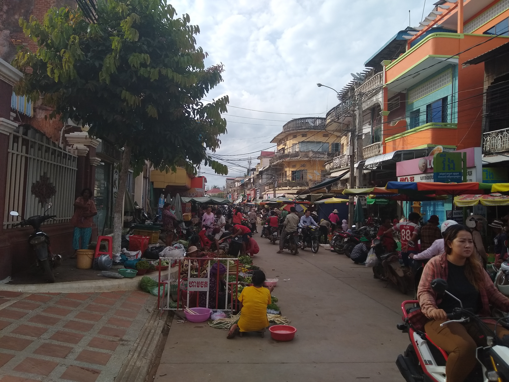

On the 30th March 2019, Charlotte and I set off travelling around the world for 6 months, taking a break from work, experiencing new cultures and visiting a lot of places we've wanted to go to for a long time.
I'll be endeavouring to write a weekly blog here with a brief update as to what we've been doing and where we've been - hopefully with some pictures.
For anyone that's interested, this will hopefully give you a way of keeping up with what we're up to and it will force me to regularly pen [type] something to remember the trip by afterwards.
I thank Charlotte in advance for putting up with the hours I'll likely spend writing and re-writing this and the time spent trying to make the website code do what I want it to!
We flew from Sydney to Auckland with Air New Zealand. This amounted to the finest in-flight service of any airline on any leg of our journey so far, which says a lot. Firstly, over the tannoy the captain sounded just like Brett from Flight of the Conchords - which is more or less my sole reference point for Kiwi culture - so this was a fantastic start. The safety video was delivered by the All Blacks rugby team, before a very welcoming and generous cabin crew came along with a hearty breakfast of eggs and several glasses of delightful New Zealand sparkling wine. I wasn't much for blog writing after the third glass, so I settled in and watched Aladdin on the enormous in-flight entertainment screen.
We landed in Auckland, which was a shame since we weren't visiting there for a week or so.
Having booked our key international flights before the itinerary was finalised, we ended up booking a second onward flight down to Queenstown, the outdoor activity capital of the South Island. Queenstown has a delightfully small airport where we were surprised to be greeted immediately off the plane (and before baggage reclaim) by Charlotte's cousin Emily. Emily deserves a shout out for being an absolute star of a host for putting us up, showing us the sites of Queenstown and even loaning us her car while she was at work!
Our first day in NZ was a Thursday, so whilst Emily went to work we took her car up the mountain for a day on the ski slopes of The Remarkables. The incredible part of this is that only 2 days prior we were lounging on a beach in the sun and surfing without needing wetsuits. Emily went above and beyond again in lending us 2 full sets of ski attire and 2 lift passes for the day, which meant we only needed to hire a set of skis (Charlotte) and a snowboard (Me). This wasn't without it's challenges, since the gear hire up the mountain was tied to the lift passes, which bore the names and faces of Emily and her brother Tom. This caused more than a little unease and Charlotte was about ready to give up on the free lift passes before we'd even started... We eventually decided that if we kept helmets and buffs on, we looked enough like Emily and Tom to pass the cursory glances of the ski rental staff. We managed to pull it off, even managing to come up with forged signatures for them on the spot!
Once that ordeal was over, we had a pretty decent day on the mountain. We were entering New Zealand’s spring proper by this point so the snow was a little patchy, but we had a few good uphill hikes to some less-tracked snow and got some sunshine too.
There was plenty of cloud lower down the mountain that we had driven up through in the morning, which then worked its way up to the top by the afternoon. This meant that after lunch we were taking chairlifts into the cloud and had poor visibility where the snow was best, but overall I count us lucky given the narrow window of days we had to hit!
Friday was also a school day, so we borrowed the car again and took a drive around Lake Wakatipu to the town of Glenorchy. It's worth a moment to explain why the drive was an activity in its own right.
New Zealand is stunning.
The South Island has a bit of a feel of Scotland about it - it's covered in craggy mountains and beautiful lakes and the winding roads are just spectacular. Emily's Subaru Impreza came into its own as we threw it up, down and around the tight bends of the lakeside road. It was one of the most fun drives I've ever had!
We stopped at Bob's Cove on the way for a walk. This was a very picturesque spot.
Then again, so were any number of other places we stopped over at to admire the view:
Glenorchy was a quaint little town with a beautifully cosy cafe where we had lunch before heading back into Queenstown to meet Emily for some well-earned sunset mulled wine on a boat on the waterfront and dinner at a local pub. Ideal.
Saturday was a gorgeous, sunny day - and a weekend - so Emily was free to join us. Hurrah! We got up early and set off for a walk up Queenstown hill, which got the blood pumping and gave us a great view down over the town and the lake. This meant we earned ourselves a good breakfast, which came in the form of the most incredible creamy mushrooms on toast from a vegan restaurant called Bespoke Kitchen. They were so good that Charlotte has subsequently been compelled to email them asking how on earth they made it so creamy without dairy.
In the afternoon we drove up into the Gibbston valley, which is known for its Pinot Noir vineyards - Charlotte's favourite! We hired bikes from the first vineyard and had a very pleasant afternoon's cycle between another few vineyards sampling a very large number of wines and enjoying the sun. Overall this was a very action packed day and by the evening we were all ready to crash out on the sofa with a movie (and more wine).
Our last notable activity in Queenstown was to head up the Skyline gondola to the other peak above the town and have a ride on the luge. This downhill-go-kart-like experience looks relatively tame, but was surprisingly exhilarating!
Overall summary - a cracking, activity filled few days and a lot of temperature fluctuations. From skiing and luge-ing in full winter gear through to lounging in the sun in deck chairs at the vineyards and sweating the boozy cycle!
Goodbye Australia
Yes, I'm still writing this. No, we're not still in Australia.
That being said, this blog does cover our last few days down under. As we reached the Sunshine Coast, I finally got my chance to mark off Oceania on my quest to surf on every continent. I'd been checking the surf forecast religiously for the week leading up to our arrival into the surf town of Noosa and it was far from sure that there would be a wave worth the paddle. In fact, having parked in the centre of town, I was disappointed to find that the town end of the beach better resembled a millpond than the mighty Pacific Ocean! Fortunately, as we strolled along the picturesque boardwalk further away from the shelter of the headland the swell built to a passable, clean wave. Spirits renewed, we headed back into town and picked up a rental surfboard (and a bodyboard for Charlotte) and relocated the van to a car park nearer to the surf.
Whilst we'd been relatively active in general in the months of travelling up to this point, I'd not surfed since Ecuador nearly 5 months prior so predictably I paddled myself tired very quickly. Taking the necessary rest stops to sit out back and enjoy the Australian sun, I had a very enjoyable surf which really satisfied an urge. After I'd had my fill and we had refiled on an avocado lunch, Charlotte had a go and I coached from the bodyboard - it was even warm enough (remember this was Australian winter) to be in without a wetsuit.
Once we had dried off, we dropped the rental gear back and had a mooch around Noosa town centre, stopping at the Surf Life Saving Club bar for a drink. This had the best view of the beach of any establishment in the neighbourhood and was a lovely place to watch the sun begin to dip into the sea.
The next day was sadly the end of the road for Ivan the campervan, who we dropped off at the depot in Brisbane. We were due to return him with a full tank of cooking gas, which involved a trip to BCF - my new favourite shop in the world. BCF stands for Boating, Camping and Fishing. Imagine a shop with the size and selection of a Decathlon sports shop, but with a narrower focus on larger products. There was one end-of-aisle bin where kayaks were propped up on end like a baguette stand in the Tesco bakery aisle. Truly the stuff of dreams.
Anyway, I digress.
Once we had dropped Ivan off and checked into our Airbnb for our last night in 'Oz, we took a train down-town into Brisbane centre to explore the pleasant CBD and riverfront.
It definitely had a vibe of London about it; the South Bank of the river in fact had the exact same combination of river-front walk, brutalist concrete arts centre and Ferris wheel as London's South Bank! It get's a +1 for the addition of a Nepalese peace pagoda and jungle walkthrough.
The botanic garden was also delightful and gave us our last taste of Australia’s critters - Ibis and enormous water dragons.
Our afternoon and evening was largely food and drink based. We took a walk into the gentrifying bohemian quarter for an excellent coffee to recharge, then (after being briefly lost inside the modern art museum trying to take a shortcut) had a few drinks in a former milk factory whilst debating some wedding ideas. Given Brisbane's metropolitan feel, I'm counting our last dinner in Australia of pizza as a local dish to end on...
Next stop, New Zealand!
Having a whale of a time
Australia is full of critters. This, for example, is a "bush turkey". Commonly found scavenging around our overnight stops and annoying me around beaches by pecking at my rental surfboard.
Kangaroos were pretty regular sights along the Bruce Highway… sadly all of the expired variety.
We decided we couldn't leave Australia having only seen the roadkill version, so we stopped in at a wildlife sanctuary on the way to Hervey Bay. This reserve was set in acres of enclosed bushland providing safe harbour for rescue and rehabilitation of dingoes, emus, kangaroos and a spectacular array of Australian birdlife.
Emus are really bizzare creatures to look at.
The kangaroos were free to roam throughout the reserve and we were free to feed them, which made for an incredibly close encounter. They are strange to watch move, hopping on their springy legs and resting on their strong tails like a tripod. They're also very tall if you kneel down next to them.
As amazing as it was to get so up close and personal with the 'roos, this was really only a warm-up act for our next encounter in Hervey Bay. We'd booked ourselves onto a whale-watching tour, since mother humpback whales pass through the bay with their calves as part of their annual migration around the time we visited (1st of September - spoiler alert: I'm now back in the UK and playing catch-up on a month's worth of blogs!).
We boarded a moderately sized motorboat with around 20 other day-trippers and crew and were briefed that the itinerary for the day would largely depend on what we came across. The overall plan was to spend some time trying to find whales in the morning and then visit Fraser Island in the afternoon, flexing based on when we came across any pods.
With all the talk of uncertainty around when or where we would come across the whales, we were very surprised when a few minutes later we came across our first pod of 4 - a calf, Mum and 2 "escorts". Typically "affiliations" and "disaffiliations" between whales - that is when 3 or more whales decide to swim together in a group or go their separate ways - happen very regularly in Hervey Bay and the numerous pods we saw changed regularly during the day. Pods. Plural. We saw an unbelievable 25+ whales that day - I lost count.
They entertained us with a variety of playful behaviours that our guide explained to us as we went, including:
Breaching - when whales use their strong tail fins to propel them straight upwards out of the water head-first:
Pectoral slapping - repeatedly whipping one of their pectoral (side) fins against the surface of the water:
Rolling - self explanatory:
Tail slapping - like pectoral slapping with the tail:
Watching from the boat was great as the whales swam around and under us regularly, taking an interest in finding out what we were. Then, as if we weren't close enough, the captain announced we were going into the water with them.
We threw on snorkels and wetsuits at record speed and lowered ourselves into the water, hanging onto a rope tethered to the boat to watch in awe as the whales swimming around us.
This was without a doubt one of the most exhilarating experiences of my life. Humpback whales grow up to 16 metres and 30 tonnes. Imagine the feeling as one of those swims directly towards you, mere feet away, before dipping it's head and swimming on under you. It was like a really extreme game of chicken, but without having control of your own mettle!
After all this excitement, we disembarked onto nearby Fraser Island to recover and relax.
Fraser Island is the largest sand island in the world, stretching around 120km from its northern to southern tip. When I say sand island, I mean that the entire land mass is built from nothing but sand. It is therefore continually shifting ever so slowly sideways, as the prevailing wind erodes away sand from one side of the island and deposits it on the opposite coast.
After exploring on foot, we took a short kayak up a freshwater stream and our guide explained how mangrove trees sprout up along the parts of the river where salt water mixes with the fresh stream, finishing abruptly at the point where the tide ceases to flood.
The edge of the island was picture-perfect white sand beach and we lazed on it for a while, interspersed with a brief fling on the water being towed on an inflatable.
When it was sadly time to leave, we went back to the main boat aboard "sea legs" - the most incredible tender I've ever seen. This boat had a separate diesel engine powering a set of wheels that deployed and retracted like landing gear to drive on land. I want one.
All in all, it was a spectacular day and one I don't plan on forgetting in a very long time.
Sail away into the sunset
For Charlotte's 30th Birthday present, I arranged a boat trip to the Whitsunday Islands.
This was a 3 day 2 night trip on a beautiful sailing catamaran called "On Ice". We set off from the impressive Airlie Beach marina, which is supposedly the most expensive marina to berth at in the whole of the southern hemisphere.
We boarded with the sun shining in the afternoon for our first few hours sail to an evening mooring in a sheltered spot between Hook Island and Whitsunday Island. Here we watched the sun set over the water and had a beautiful salmon dinner prepared by our chef and deck hand, Julia. I also bonded with our captain, Jonny, by rubbing in the recent England Ashes test victory (that's cricket for any non-English readers) over Australia.
Not a bad view to start things off:
In fact, the view got a whole lot better. I'd managed, more by luck than judgement, to book the trip when there was no moon. This meant that as the sun went down, we were greeted with a fantastic view of the stars. There was little enough light pollution that we were able to pick out Jupiter, Saturn, the Milky Way and the Scorpius and Orion constellations. The only tricky part was keeping track of which direction was "up" with the boat rotating around its anchor.
Sunrise outside our delightful en-suite cabin each morning brought with it a delicious breakfast of English muffins and coffee on deck to kick-start the day's activities.
First stop on our first morning was Whitehaven beach. This was pretty much the most beautiful place I've ever been.
We landed on the unassuming opposite side of the island and walked up and over the top to the grand review of the Whitehaven panorama:
Apparently they filmed scenes from "Pirates of the Carribbean" here - specifically when they're dragging the chest with the heart of Davy Jones across the sand.
After we had our fill of photo taking, we ventured down onto the beach for a paddle in the water, where we found scores of brown rays having a kip in the shallows. These were super exciting and surprisingly easy to get close to.
The other unusual wildlife encounter was some enormous green ants that tasted of lemon. Unsure as to how Julia discovered this, but if you lick the back end of one of these ants, they taste like citrus fruit. I can confirm this to be true. Very bizarre.
In the afternoon we snorkeled around the boat over some southern stretches of the barrier reef. Here the bleaching of the coral was quite startling, with the added dead coral due to typhoon damage giving quite a post-apocalyptic feel.
However on our second snorkel site we saw loads of fish, whose feeding frenzy we found ourselves amongst.
After some sunbathing on deck and a few drinks, evening brought another spectacular sunset more delicious canapes and dinner on the boat, which we paired with some sparkling pinot noir we'd bought in an off license in Airlie Beach. Working on the "when in Rome" mantra…
On our last morning we found a secluded spot off another island to paddle board in the warm morning sun to our very own private coral beach. Our only company was a small sea turtle we found swimming nearby.
After another spot of snorkeling, it was time to set sail back to Airlie beach. This trip was spiced up by Jonny's offer to let me sail, which was really fun. I had it moving at 8 knots at peak which felt rapid under sail.
Safe to say a really idyllic trip. Happy Birthday (+ a few months) Charlotte!
Head out on the highway / Looking for adventure
Leaving Cairns, we began our grand journey south in Ivan the campervan. Guided by his inbuilt sat-nav, who we named Sheila given her Aussie accent, this was altogether a very enjoyable experience.
Ivan was a relatively new long wheel-base Toyota Hi-Ace with automatic transmission and cruise control (important on a 2,000+ kilometre journey) and a high top. This meant that unbelievably, I could stand up straight inside and move around our spacious cabin complete with fridge, sink, gas stove, microwave and 2 sofas around a table that converted into a full double bed (which I also fit in!). Overall, a lot of boxes ticked by the van. So much so, Charlotte is coming round to the idea of maybe having a van in the future in the UK. That's captured in writing here for future reference.
Our first sight-seeing stop along the way was Mission Beach. It was a blustery, wet day but we had an enjoyable walk along what was - even in grey light - an absolutely stunning slice of palm-lined paradise.
Further south was the Paluma range national park, where we came across a huge crystal-clear swimming hole where we had a refreshing dip. The water was so clear that as we sat on the rocks above watching the perch we found a family of fresh-water turtles staring back up at us! This was a very successful pit-stop considering I was freestyling it with the map, looking for somewhere to stop in an area devoid of any guidebook recommendations… Having said that, the 3km of unsealed, pot-holed dirt road took a while to navigate in a lumbering van with a retrofitted high centre of gravity.
Along the Bruce Highway, which was our almost sole road between Cairns and Brisbane, we stopped wherever we could at "rest stops" rather than paid campsites. I'll explain. Australia are really good at public facilities, providing shower blocks, clean toilets and even public barbeques at major beaches, parks and on the highways. Rest stops are simply areas by the side of the highway where you can pull over and park during the day and/or night with a toilet block and often a park bench for picnics. A bit like a UK layby crossed with a motorway services, except without the Starbucks coffee, or the traffic. Or the petrol station. In fact, it's not really like either of those things.
I was determined to have some "shrimp on the barbie" somewhere in Australia. Objective achieved - prawns, sausages, mushrooms and chicken kebabs cooked over a wood fire. This was at a park somewhere between Airlie Beach and Rockhampton that had probably more than half a dozen brick barbecues pre-stocked with firewood.
Side note: I'll describe Airlie beach separately in a subsequent blog since that was our departure point for the Whitsundays.
Of the few campsites we did stay at, the highlight was undoubtedly an unassuming forest on the outskirts of the town of Agnes Water. It was a beautiful, tranquil setting with only the kookaburras and the sound of the water breaking onto the beach just below.
The site was walkable to 2 spectacular beaches - Workman's beach and Chinaman's beach, each of which provided us with white sand, sunbathing and gentle surf.
Agnes water was a sleepy town with exactly 1 pub - a bizarre place which provided sit down dining, bar seating, pool tables and a betting shop floor all smashed together. I suppose as the only joint in a town it's nice to try to appeal to everyone.
On the headland above Agnes Water is the town of 1770, which was the first place where Captain Cook landed when he reached Australia in, you guessed it, 1770. Paths still flank both sides of the outcrop surrounded by thick tropical foliage, giving a flavour of how paradisiacal the new land must have looked on first sight.
Basically, all of the coast of Australia is beautiful. I like it a lot.
"They don't call it Great for nothing"
Sydney is one of my new favourite cities. Cairns on the other hand was a little forgettable. It's selling point was being North on the Eastern coast of Queensland, giving us a jumping off point to drive all the way down the "Bruce Highway" (I know, how Australian is that) to Brisbane. Oh, and the Great Barrier Reef. Let's not forget that.
We picked up our camper - who we named Ivan - and checked into the nearest campsite to get our bearings and book ourselves on a dive boat the following day to see the reef. There are over 300 operators running tours on the reef from Cairns, which made the choice a little daunting. Following a few recommendations from the campsite, internet searches and the guy in the camper rental shop (a former dive instructor, go figure) we went with "Diver's Den" on the promise of a fast, modern boat to maximise time on the reef and decent options to mix dive time and snorkeling.
Having popped into the dive shop to make sure we could hop on a boat the following day, we decided to head for the beach. A few miles North of Cairns we parked up at Palm Cove. It's worth pointing out at this stage that northern Queensland is much hotter than Sydney. Winter here isn't really a concept that has a huge amount of bearing on beach time. It was a gorgeous spot and we passed a couple of hours lazing in the sun.
On the way back to the city we got into the swing of van life, deciding we'd simply pull over at another beach to cook dinner rather than waiting until we got to our final destination and the sun was gone. We'd stocked Ivan's fridge earlier in the day, so cooked ourselves a simple pasta dinner to eat right on the sand and watch the sunset. Not a bad start.
The next morning, we parked up on the waterfront and boarded our boat. The slogan running through Cairns is "they don't call it Great for nothing…" so we were suitably excited. To be fair, this was a bucket list item on our trip. The boat was a large, fast catamaran with around 40 passengers and crew on board. Most of these were snorkelers or people doing "intro dives". This strange package had people with scuba masks on but just a few metres down and with 5 or 6 people physically tethered to each instructor. It looked pretty comical as they paraded in a long line a bit like an underwater Irish dancing troupe doing Riverdance in wetsuits.
Fortunately for us, having gotten out PADI open water certificate in Thailand, we went straight into the water after a brief safety briefing with our German guide, . We had 2 dives at 2 different reef sites - Hastings Reef and Tongue Reef. Highlights included seeing a shark overhead whilst we were down around 12 metres and 3 enormous barracuda chilling on the seabed. Aside from these, we saw more larger sized fish in Thailand. What the Barrier Reef offered was the feeling of being inside a tropical fish tank. The colours and quantity of the fish were amazing, not mentioning the coral itself which was like something from another planet entirely. Between our 2 dives, we had a surprisingly tasty buffet lunch and sat out on deck enjoying the sun shining off the reef sat just below the surface around us.
We also went into the water for a snorkel between dives. Where the diving deeper gave a greater sense of adventure and like we were truly in another world, the snorkeling gave us better light, as the sunlight only carries so far in water before the colours start to become distorted by the water and the reds become imperceptible to the human eye. This really gave the wow factor of how colourful some of the fish and corals are.
After we finished in the water, we went up top and enjoyed a cup of tea in the sun and discussing with other divers and snorkelers what we'd collectively managed to spot. All in all a fantastic day out and something I'd urge everyone to see (if you happen to be passing through Australia that is).
And do it soon, before the coral is all bleached...
G'day Straya
Sydney provided a probably-needed change in many ways to our previous few months. Travelling in Asia was fantastic but Australia offered some a few pleasant home comforts:
Ability to speak the local language - though admittedly we had to be taught a few pieces of dialect; turns out "Australia" is pronounced "Straya"
Temperate climate - we landed from 40°C Hanoi in shorts and flip flops ("thongs") and were equally delighted by the 21 degree winter's day and perplexed by the "Sydney-sider" locals dressed in winter coats and beanie hats.
Paying with card - our Asian cash-is-king mentality made us take out cash at the airport that we then struggled to spend. We've gotten so used to contactless ("paywave") payments in the UK you really miss them when they're gone.
Hummus - doesn't seem to have made it to Asia. The most middle class thing in this entire blog series. Turns out Australia has a great hummus selection…
Sofas - with Asian hotels being so cheap we tended to gravitate that way, so lacked any kind of living space and made coffee shops and bars our de facto living rooms.
Sofa-wise, we were very fortunate to stay with Charlotte's aunt and uncle in Belrose, north of central Sydney in suburbia. They have a beautiful and very comfortable house (great sofa) and it was really nice to feel like we had a home for a few days. Thank you to Anna and Richard for being wonderful hosts!
We arrived into Belrose early in beautiful afternoon sunshine and so decided to hop on a bus down to nearby Manly beach. From here we strolled around the coast to nearby Shelly beach to dip our toes in the water and marvel that Australia has such beautiful coast in such proximity to its largest cities - something I think the UK could learn from. We also picked up some essentials from the local shops after our bags were waylaid in Hong Kong and showed no signs of arriving soon!
In the evening we had dinner with Anna, Richard and Charlotte's cousins Tom and Chris and his 3 lovely, energetic (read loud!) young children, Oli, Ellie and Bennie. Home cooked food was a real treat, especially the Birthday Pavlova for Chris.
The next morning we went for a walk with Anna up to the beautiful Palm beach, where a spit of land juts out between two beautiful yellow brush-strokes of sand. Fun fact, this is where they film the long-running soap Home and Away. After a walk up to the top of the headland we rewarded ourselves with coffee in the sun at a delightful waterfront cafe. Here we had our first of many critter spotting opportunities down under as a pair of parrot-like birds perched on the table next to us.
Mercifully, our bags arrived whilst we were out and were waiting (in prime view!) on the doorstep in Belrose for us. We picked up a change of clothes and then headed into central Sydney for the afternoon.
Here we took our sightseeing seriously, ticking off the key sights in sharp order before the sun went down:
Rocks museum - a really interesting exhibition of aboriginal history and the arrival of European settlers, noting that most records of aboriginal life are incomplete or speculative since the settlers (who made the only record) did not understand much of the culture they were observing
Cadman's cottage - an interesting marker of what dwellings for ex-convicts brought over by the British in the "Rocks" area would have looked like before the harbour bridge construction demolished many of them
Harbour bridge - designed by a company in Middlesbrough, UK (who subsequently went bankrupt as a result of its construction), it was the longest arched steel bridge in the world at time of construction
Botanic gardens - a vast and beautiful green space right on the edge of the CBD and the perfect view of the sunset behind the bridge
Opera house - we had dinner at "Opera bar" overlooking Circular Quay and then went to see West Side Story in the evening (thank you very much to Charlotte for an awesome birthday present!). Great performance, with a slightly dodgy Puerto Rico meets Russian accent from "Maria".
Quite a day.
With our last day in Sydney being more of a blustery winter one, we walked the coastal path from famous Byron beach to Coogee. This walk takes in some fantastic coastline, and the swell that day was spectacular - I could have spent hours watching it - but it was far too rough for me to surf.
To head back towards Manly, we took the ferry that runs from Circular Quay to Manly harbour. The same swell made for an incredible crossing as we left the shelter of the harbour, with our boat and those around pitching wildly in really high seas. The view of the harbour and it's landmarks on the way out was also incredible. I even had a quick body surf on Manly beach to make sure I'd checked the box of going into the water!
For our last evening, Anna and Richard very kindly took us out for dinner at the Wharf Bar in Manly to celebrate our engagement, which capped off a fantastic few days.
We could get used to this other style of travelling...
Hanoi Rocks
Hanoi was to be our last stop in Vietnam and indeed in Asia… for now anyway.
Another city of hustle, bustle and traffic, what Hanoi had over Saigon was more of a recognisable and attractive old quarter. The streets of aren't necessarily quaint or in many cases actually that old, but the area had the feel of being simultaneously calmer than a modern city would otherwise be whilst being laced with too many people to fit comfortably in it.
We sampled some of the Northern Vietnamese dishes that we had been waiting to experience in the right place, which included a really delicious Pho Bo (so much more than watery noodles with beef) and Nem Nuong - grilled meat, noodles, pickled ginger and salad which you roll yourself in rice paper parcels and dip in chili sauce. We also visited numerous coffees shops to watch the city buzz past.
The Hoan Kiem lake on the edge of the Old Quarter - literally "lake of the restored sword" - featured a pretty red temple on an island over an arched bridge. Inside is a sculpture of a breed of giant turtle that once dwelled. Legend has it that Emperor Lê Lợi was given a magical sword to aid his revolt against the Ming Chinese. After the battle in 1428 a golden turtle god rose from the lake, snatched the sword and disappeared back to the depths - restoring the sword to the gods.
We also had a less successful sightseeing stop at the Bach Ma temple, which was completely closed off for renovations.
In the evening we stumbled across an outdoor rock concert featuring a number of up and coming Vietnamese bands. Whilst the Vietnamese lyrics were lost on us, the atmosphere was electric and I had a completely uninterrupted view over the local crowd owing to my comparatively abnormal height. One band did unexpectedly break into a rendition of "Faint" by Linkin Park which was surprisingly good!
Speaking of my height, below is a photo of me looking like a giant as we met a group of Vietnamese students next to the lake who wanted to practise their English. We discussed weather and seasons at length (they've got English small talk down…) and as usual my lack of enthusiasm for the English Premier League was a disappointment and mentions of cricket drew blank looks.
After "rocking out" we found a street stall serving Bia Hoi. This is a Vietnamese cultural experience I was looking forward to. Bia Hoi translates as "fresh beer" - lager which is brewed that day and served direct from the tank to large crowds packed into tiny plastic chairs and tables on the street. One glass cost 36 English pence based on the exchange rate of the day since it doesn't have preservatives and needs to all be sold on the day!
The next day we arranged to go for a walking tour led by local university student Trang, who showed us around the Ho Chi Minh mausoleum complex. The massive stone structure holding his embalmed body (at odds with his own requests and understated tastes) sits right across from the modern government headquarters. Still the frequent flyer despite his mortality, his body is flown to Russia each year for maintenance.
Behind this, the simple stilt house that Ho lived in during his time in Hanoi stands in stark contrast to the extravagant palace that he eschewed for a more 'grounded' dwelling. These days the palace is used mostly for hosting foreign dignitaries, while the stilt house is preserved as a museum of Ho's life, set next to a calm lily pond.
Not content with this small exhibition, an enormous museum of Ho Chi Minh's life and the rise of Vietnamese communism has been erected in the same grounds. Modelled on Lenin's tomb, the hammer and sickle atop the entrance to a brutalist granite construction leave no surprises as to the themes you encounter inside. I've never been to a museum like it - the exhibits inside were almost like modern art works, with reconstructed dwellings and war memorabilia arranged into dramatic dioramas.
The local gem we hadn't read about and that was the highlight of our guide's recommendations was "Train street". This small, bustling street of colourfully painted houses and cafés is dominated by the train tracks running down the centre, bearing a locomotive that runs north to south through the city.
Assuming this would be a small, historic steam puffer or similar, we settled in for an "egg coffee" - something between an egg-foamed cocktail and a sugary coffee; surprisingly delicious but very filling. How wrong we were. With military precision, a few minutes before the train was due to pass, a whistle was sounded and all the cafés flattened their outdoor tables and chairs and ushered their clientele up against the walls. Moments later the train blasted through - it was enormous, taking up every bit of the width of the street and tearing past at an obscene pace and volume!
Within a minute of its passing, the chairs were back and the street continued as if nothing had happened.
On our last day we had a wander around the French Quarter, where there are indeed some buildings with noticeably European stylings but more often, it seems, modern office blocks. Back in the Old Quarter we picked up some last-minute souvenirs (coffee and a Vietnamese percolator for our upcoming camping trip!) and stopped off at an "historic" house. Broadly similar to market houses we'd seen in Hoi An, it was still interesting to get an idea of how a family would have lived in Hanoi in one of the typical "tubular houses" - most buildings were built very long, thin and short rather than over multiple levels.
So onwards and Southwards - a whole new continent beckons. Watch out Oceania.
🐈 🐑 (Cat Ba)
The trip from the Phong Nha national park (thank you Charlotte for the write-up!) to Cat Ba island was a daunting 16 hour bus ride. The first part was overnight, once again folded like an omelette into inadequately sized sleeper seats. On the plus side, most passengers got off in Ninh Binh at 4am so we retreated from our allocated seating to the very back where 3 extra-legroom berths side by side provided 2 hours of passable sleep.
We arrived in Hanoi to change buses at an ungodly hour and sat by the side of the road dozing and waiting for somewhere that served breakfast to open. The next few hours on a smaller (upright) bus passed in a blur of partial dozing as we rolled on and off of a small ferry to hop from the mainland to the island.
Cat Ba is a moderately sized inhabited island sat within Lan Ha bay. Lan Ha itself is right next to its famous neighbour Ha Long bay, divided more for attribution to their respective mainland towns than for geographical distinction. The island promised easy access to the 2 bays to view the famous Karst limestone islands that you've seen in various travel documentaries or castaway films.
On arrival and reeling from the journey we decided to seek out a tropical beach to collapse on. The main town has 3 walkable beaches imaginatively named Cat Co 1, 2 and 3; these are inexplicably ordered 1, 3 and 2 running up the coast. Cat Co 1 was overflowing with rubbish-strewn water and Asian tourists to the point there was barely any sand available. So, we took a pleasant walk around the headland towards Cat Co 2. Sadly, this turned out to be a construction site as lax planning laws have allowed a disgustingly tall hotel to be built right on the sand. Upon asking a security guard how to pass to access Cat Co 3, we were informed that it was closed - an extension of the same ghastly hotel is being put up there…
So, we had the briefest and least satisfying of dips in the water back at beach #1 to at least wash off the sweat of our walk and vowed to venture further across the island next time for somewhere less developed.
The next morning we set off on a boat tour with local operator "Cat Ba Ventures" to see the bays. Our 2 tour guides were eager, humorous and very informative about the sights as we passed. Our first stop was at a local floating fish farm. Over 1000 people live through sun and typhoon in the bay on around 200 self-built platforms which are assembled in the harbour and then towed out into the bay to be anchored. Generations live at sea and rarely venture to land - boats selling supplies from the mainland stop by daily. Previously these islands were constructed with foam ballast for flotation, but this tended to be badly damaged during inclement weather. Nowadays the majority are constructed from blue Japanese chemical barrels bearing all kinds of health warning signs… I only pray they are aggressively washed before entering the sea.
The farm we stopped at had some enormous fish, with fully grown Kobia reared over 5 years to a maximum of 45kg. The one pictured below is a mere 20 kilos! Each farmer also keeps a large pet fish for luck - this farm had a whopping 60 kilo grouper which was sadly shy for photos. He was the most podgy, obese fish I've ever seen.
The Karst islands number around 360 in Lan Ha bay and cruising here provided the majority of sights during the day. We ventured to the outskirts of Ha Long for lunch (spoiler alert, the islands all look remarkably similar) but avoided going too far in since the tour traffic from Ha Long bay is immense. The rocks really are very beautiful - more so than those of the national park in our previous stop for being surrounded by the inkpot water; the clear sunshine all day also flattered. The term "Karst" is given by the name of the German scientist who documented their formation. These islands are limestone outcrops which were originally underwater but which due to changing sea levels now stand dotted through the bay like green jagged meteors.
We stopped in a couple of particularly postcard-worthy spots to swim and jump from the boat and to go ashore on a few empty, stunning sand beaches. Of course, for every picture-perfect photo, there is the off-screen litter that washes in from mainland Vietnam and China. The amount of plastic waste in the water is quite staggering and makes you want to double your reduce-reuse-recycle efforts.
In the afternoon we decanted into kayaks to explore some of the network of ragged (and blissfully shaded) caves running through the islands, ending up in a beautiful lagoon which becomes completely cut off from the outside world at high tide.
The boat crew provided an expansive spread of seafood for lunch and had a well stocked beer cooler, meaning by the journey back to land we were very contented and sat watching the dipping sun cast warm, flattering light across the stone. A bucket-list kind of day.
By hiring a motorbike we managed to explore the island a little further, taking a ride into the centre and marvelling at the tropical landscape. I'm now a complete convert to motorbikes since the Phong Nha national park. It is a brilliant way of winding through stunning scenery on winding, undulating roads. It also yielded a much prettier, sandier and quieter beach to lie on.
Our other big ticket activity from Cat Ba was Deep Water Soloing.
This is the act of rock climbing without ropes over water, safe in the knowledge that you can make a controlled exit into the sea below. Needless to say when you're at a height of 12 metres (that's 39 feet for any pre-metric or American readers) that doesn't necessarily provide complete comfort. The climbing outfit we went with were a little lacking in terms of instruction and in setting expectations for the level of difficulty, which meant the climbing was all pretty tough. However, this was by far and away the most picturesque climbing I've ever done and I absolutely loved the freedom of climbing to 12 metres on a 6c+ graded route (for anyone who knows climbing grades, for me that's a pretty hard climb) without needing to worry about ropes and safety gear. Jumping from that height into water is also a huge adrenaline rush in its own right!
The food of Cat Ba was largely tourist-targeted but we did sample the "ice cream rolls" that we'd seen in several places in Vietnam, where ice cream is made in front of you on a frozen plate by continuously beating and scraping milk at great speed with 2 spatulas, before turning it into rolls for presentation. Surprisingly tasty.
The bays and islands lived up to everything that was promised in terms of scenery and will live long in memory as a reference point for the beauty of the country of Vietnam. Our journey in Asia was almost over, with only the capital of Hanoi to come.
Pot Noodles and Gladiators
Hello, Charlotte here again to talk about Phong Nha (pronounced Fong nyah). Phong Nha is a relatively new addition to the well trodden backpacking trail of Vietnam and having been promised an activity cave, we were sold.
On arrival to our "homestay" (aka a hotel) we were promptly invited to 'family dinner', which we soon found out was not with the family but with all the other guests. We've stayed in a lot of private rooms as accommodation in Asia is so reasonable, so it was good to get back in touch with our social side. Always good to talk to someone that isn't each other! The feast arrived, featuring all sorts of Vietnamese specialties including my new-found favourite: soy aubergine. We've really honed our chopstick skills over the past weeks, despite Simon's weird technique. I know everyone has a different style, but it turns out Simon's is so weird that even the German couple we'd just met commented on it.
The next morning we set off on our scooter to "Dark Cave", the aforementioned activity cave. We ziplined to the entrance, donned head torches and set off into the cave. Our guide found a crevice which was barely noticeable and we set off single file down a muddy path, generally only one foot's width for about 10 minutes. Eventually we came to a clearing and what can best be described as a dark hippo pond, with another group wallowing around. We slathered mud on - whilst not unpleasant, I doubt the health benefits! The guide told us to turn our torches off, to prove that, as the name suggests, it was indeed a very dark cave.
We washed off the mud, left the cave and went for a kayak and a go on the assault course. The highlight was a zipwire à la my favourite nineties TV programme 'Gladiators'.
We hopped on the motor bike to head to our next destination - "Paradise Cave". Not having eaten, we stopped at what seemed to be a restaurant. Noodles with chicken? Yes please! Promptly we were brought two pot noodles (my first in years) with fish balls, akin to polystyrene balls. No matter - they did the job. Paradise Cave was beautiful, despite a trek uphill to the entrance (who'd have thought?) and was a kilometre walk of very well-lit stalactites and stalagmites, which often looked like waxy candles.
One of the surprising highlights of Phong Nha was the scootering. Having thus far been a very cautious scooter-rider (with good reason - see this blog) I have finally relaxed a little thanks to the generally empty roads with surrounding beautiful scenery. The limestone karsts sticking out of the rice paddies are one of Vietnam's most iconic vistas.
We also stopped by a botanical garden (by which I mean a jungle) for a walk. It contained a waterfall (a trickle of water), a swimming area (a pond) and a view (which was actually good), but overall a good experience on account of the much needed exercise which had been lacking in Asia due to the heat.
Our last stop was the well-named 'Pub with cold beer' for another lovely view, before gearing ourselves up for the 16 HOUR bus to Cat Ba Island …
A hot day in Hué
Hué straddles the very centre of Vietnam where the Demilitarised Zone separated North and South Vietnam during years of conflict. It is the site of the citadel which housed 7 generations and 13 emperors of the Nguyen dynasty, the last dynasty of Vietnam, which spanned 1802 to 1945.
We checked into the Four Seasons - ok, not the Four Seasons but the Hué Four Seasons Hotel which to my knowledge bears no affiliation. This was one of the loveliest places we've stayed in Asia and deserves a mention for the sister and brother team who ran it and were on hand at any time to provide advice and kind hospitality - with flower petals left on the bed and tasty breakfasts for only a few pounds a night.
Having settled in we had a wander down the front of the Perfume river into town to have a drink at the traveller-favourite "DMZ Bar". The war theming inside was quite spectacular, with a diorama taking up the entire ceiling and an upside-down helecopter acting as the fan and light above the pool table.
From there we plotted our route for the following day before dinner. As we wandered back along the river to the hotel we admired the pulsating rainbow lighting of one of the bridges between the modern town centre and the citadel.
The following morning, armed with a small motorbike, we set off the to visit the 2 largest mausoleums of the former emperors. Winding north of the town along the river, these enormous sites were in some cases residences for the emperors whilst they were still alive in addition to being their final resting places. It's hardly surprising they wanted to get decent use out of them. The first we saw - of one of the late emperors - was an obscenely large site. Set over 4 levels, it's impossible to grasp how large the complex is without actually being there. Apparently there was a foiled coup against the emperor as a result of the cost and forced labour required to construct it.
Some of the most interesting features were the walls of the very highest building in front of the mausoleum. One room was decorated in vivid mosaics that came out of the wall at you, fashioned from shards of glass. The other room by contrast was a fantastic example of cost cutting, where the plastered walls were painted to look exactly like marble!
The second temple was actually larger and more sprawling but seemed less decadent somehow, with its lily ponds and simple (shorter) temple buildings.
The drive overall was scenic but unpleasant. That day the mercury was pushing over 40 degrees and our hope of the breeze cooling us on the ride between sites was instead like the feeling when you open the oven door and burning air rushes out. The heat was inescapable.
We stopped for a quick Banh Mi lunch - a baguette filled variously with pork, sausage, salad, pate, chili sauce and salad - at a small kitchen by the side of the road. The family who ran it were incredibly hospitable to us and were delighted to talk about England as they plied us with iced tea and fresh fruit which they had no desire to charge us for.
Suitably refuelled, in the afternoon we visited the grand and expansive citadel. There was a stark contrast between the reconstructed or surviving buildings - grand theatres, palaces, pagodas and gardens - and the fragments of rubble where there were once buildings that didn't survive the war.
The highlight of the citadel was actually the beautiful cafe that has been set up inside one of the old buildings amongst the ponds, where we were able to escape the sun with a much-needed drink and admire the relative peace in what once was a bustling city.
The journey back to the hotel was an interesting one; rush hour traffic in Vietnam is not to be taken lightly and the roundabouts - where priority is dictated by bravery - were mildly harrowing.
Ending on the theme of transport, We had arrived into Hué on a "sleeper" bus in the middle of the afternoon. Sleeper buses in Vietnam don't really have a day option, just a pre-reclined bunk-bed-seat which is sadly (for me) designed for people of Asian proportions. That is to say my 6'1" of length was too much to be able truly fit within my designated area without some bunching up at the knees or extreme feet contortion. I therefore wasn't looking forward to our next 5 hour journey North to our next stop, the Phong Nha national park...
Vietnam past, present and future
Saigon
Saigon is a loud, bright and chaotic city where gritty alleyways lined with street eateries and small plastic stools give way to huge skyscrapers adorned with futuristic light shows. It is a city of contrasts. And motorbikes. Lots and lots of motorbikes.
Bangkok may rightly boast some of the worst traffic jams in Asia, but road travel in the capital of Southern Vietnam is like nothing I've ever experienced. Endless streams of taxis honk their horns to drum up business whilst swarming, small-engined scooters weave and dodge hither and thither at terrifying speed. These vehicles are used as people carriers, goods-vehicles (I kid you not, I saw a newly boxed fridge strapped to the back of one) and even taxis. With the advent of Asian super-app Grab - which is everything Uber wishes it was - you can order a driver/rider to your exact location. They even have a green branded helmet for you.
Grab cars are generally quite high spec'd like Uber vehicles so offer the benefit over bikes of air conditioning. However, taking a bike is an unrivalled experience in feeling part of the chaos of horns, weaving and the treatment of traffic lights as purely decorative. This common tourist-targeted t-shirt sums up the Vietnamese attitude marvellously:
Other than spending our time bravely crossing roads (the trick is to walk confidently and to be predictable - people will just drive around you), we visited a few of Ho Chi Minh City's major sights.
The first of these was the "War Remnants Museum" - previously known snappily as the Museum of Chinese and American War Crimes. This building holds exhibits giving a brutal, unrelenting account of the French and American wars in Vietnam and the destruction and division they caused in this beautiful country. They pull no punches, featuring candid images from front-line photo journalists who never made it home. Other pictures showcased the brutal after effects of Agent Orange, the chemical sprayed in vast quantities over swathes of Viet Minh/Cong occupied jungle in order to strip the trees that gave the VC such an upper hand in combat against inexperienced American troops. The chemical has caused an enormous spectrum health impacts and birth defects right through to 3rd and 4th generations of Vietnamese people, making the act an abomination on so many levels.
Outside the museum, a smattering of war machines stand like trophies signalling Vietnam's ultimate victory in its struggle for independence and unification. The imagination of man in creating instruments of destruction is unnervingly creative - below is a bulldozer designed for roadworks that was simply sprayed green and sent off to war to flatten land for tanks to cross.
The Independence Palace provided an interesting pin-point in the history of the city. Used as the presidential palace and command centre for the puppet regime during the war, the building was frozen in time when the tanks burst through the gates in 1975 and raised the flag to signify victory for the Communist North. These days many of the rooms are open to visitors and the function rooms and living quarters retain all the '70s adornments and furniture - it's like walking into a time-machine.
Other notable sights included the beautiful architecture of the French colonial era Post Office (which is still in use) and Vietnam's own Notre Dame cathedral. The grandeur of the latter was reduced somewhat by its current scaffold robes.
The Jade Emperor pagoda was also interesting for being the first Confucian temple we've visited so far.
The food of 'HCMC' (the modern city now renamed to honour the North Vietnamese leader Ho Chi Minh) is a modern melting pot of cuisines and we balanced sampling local noodle specialities with some spectacular burgers ("Marcel Gourmet Burgers") and pizza ("4P"). We had a great meal at the rooftop "Secret Garden" where we sat with 2 students from London and Vietnam respectively and discussed the intricacies of the tones of the Vietnamese language (and how we were struggling with them!).
Hoi An
Given how long and narrow Vietnam is, we jumped north by plane to get to the town of Hoi An. if Saigon/HCMC represents the present and ambitious future of Vietnam, Hoi An is comfortably settled in the past. Formerly an important regional port where traders from China and Japan would flock and fishermen ruled, the city fell upon hard times when the river silted up leaving it in-navigable by large vessels.
The town has retained impressive control over its historic centre, with many ancient houses and temples preserved and with traffic controls through the pedestrianised streets. In the daytime it's a quietly bustling mix of market traders on the harbourside and a smattering of tourists braving the heat. The ancient sights and mooch-able shops selling both cheap souvenirs and artisanal craftware give way to many aromatic coffee shops.
At night, the old town takes on a festival vibe as those who spent the day retreating from the heat flock in to soak up the atmosphere of the countless colourful paper lanterns and floating candles in the harbour. It really was an atmospheric and beautiful sight.
The food scene in Hoi An was the best we've found since leaving Thailand with restaurants and street stalls serving delicious local flavours. Our highlight was "Morning Glory" (named for the synonymous greens) where we had baked aubergine with soy and garlic and a Vietnamese curry. One thing that the Vietnamese have held on to from their French occupation is the bread. Baguette with a curry is an absolute revelation.
The historic houses were interesting, if a little lifeless, since nowadays the resident families have moved out to welcome in the tourists that fund their conservation. The temples, halls and Japanese covered bridge were more interesting since they incorporated aspects of the cultures from various communities who settled during Hoi An's time as a trade centre.
Now that tourism plays such a part in the town's economy, it is home to a bewildering selection of over 300 tailors who will fully measure, draft, fit and finish any garment for you in under 2 days at a very reasonable price. Charlotte left with a very chic blazer and I came away with a new suit - the ones I had made on our trip to Delhi are now bearing the wear of 2 years on the London Underground!
We stayed in a homestay run by the delightful Hanh and her husband Mike, who was incidentally from Winchester. With bikes at our disposal it was a picturesque ride through the rice paddies 15 minutes either into town or in the opposite direction to An Bang beach. We split most days between town, beach and pool since the heat necessitated a lot of cooling off time! The sunsets over the beach towards the up-and-coming city of Da Nang 30 kilometres North were gorgeous.
Having had our fill of beach time we set our sights further North on yet more temples and historical sights. Charlotte could barely contain her excitement...
Dong on the Mekong
We crossed from Cambodia to Vietnam by boat. This was a novelty for being our first water-borne border crossing. From Phnom Penh, speed boats make a daily trip to the Vietnamese town of Chau Doc, stopping off at the border control to help tourists process their documents and visas.
The majority of the trip was through a wide and repetitive stretch of the Mekong - bringing in mind a repeat-rolling backdrop in a low-budget film. Ironically, it was once we left the main tributary that we started to see the picturesque views that we had hoped for on the Mekong delta, with bamboo and small hamlets dotting the shoreline.
Chau Doc was a bit of a baptism of fire as far as Vietnamese food goes - English menus were a rarity, so we ordered on a best efforts basis with the aid of Google translate... With mixed success. We found ourselves eating a very tasty - if intriguing - first breakfast of noodle soup with variously unidentifiable pieces of floating pork meat/organ.
With a hired scooter as our steed for the day, we set off to the nearby ecological park. Here we took a series of boat tours through flooded mangrove forest, spotting bird life and marvelling that Vietnamese people really do wear the iconic conical woven hats - our rower even had spares for us!
We returned to Chau Doc via nearby Sam mountain, from which we were able to get an impression of the vast scale of The Delta and how wide and flat it really is. The word "mountain" is a slight stretch - really more of a hill by most definitions, but forgivable in the context. Charlotte even had her first go at driving the scooter on the way back along the scenic, river-lined dirt road (and was concentrating too hard to notice me taking pictures).
Next stop was the city of Can Tho - the 'capital' of the Mekong Delta. Despite being the third-largest city in Vietnam, it didn't feel like a thriving metropolis; more a sprawling town that had grown outwards rather than upwards. We spent an afternoon promenading the waterfront, which was part redeveloped with neon lit bridges and part severely dilapidated. We stopped for a few drinks at a riverside cafe to admire the bridge and to do some early wedding venue research(!).
There is a street in Can Tho that becomes a bustling hotspot of open family kitchens at night, which we hit up that evening in search of a southern specialty called Banh Xeo - a crisp pancake filled with shell-on prawns and vegetables. It's eaten by tearing off chunks and wrapping them in a variety of large salad leaves, accompanied by smaller fragrant mint and aniseed greens and dipped in a sweetened chili dip. It was really delicious so we stayed and ordered more. Since the menu was entirely in Vietnamese, we asked for the only 2 other items advertised, which turned out to be a gooey-centred shrimp pot akin to a Yorkshire pud and some rice-noodle skinned spring rolls. All of this and a round of local Saigon beer came in at £3. All of it was also better than the pork entrail soup...
The following morning we got up at 5am to set off down the river on a small boat to visit the famous Cai Rang floating market as the sun rose. Traditionally this is the prime means of taking goods to market on the Mekong since the naturally navigable network of branches connect many areas of agriculturally rich flood-plain. We paddled through observing small local boats loading up with a fresh stock of produce from larger market boats crammed to bursting with pineapples, watermelons and potatoes. Flagpoles attached to each boat showcase the produce on offer - it's easier to spot a large pumpkin hoisted 10 feet in the air than it is to peer inside the hull of each boat in turn.
After pottering for a while we pulled up next to a small boat where a lady made us a hearty breakfast of noodle soup. A veritable flotilla of boats came and went while we ate, with our host anchoring a passing customer to her boat with a large metal hook. A freshly assembled steaming bowl would then be passed across to be consumed in situ, without even leaving your seat. It was the most delicious noodle broth I've ever eaten, served with fresh bean sprouts, pork and mint - my stand-out highlight of Vietnamese food so far.
After a high-speed encounter with a passing coffee boat where our late decision meant I had to link arms with the vendor to stop her from gliding straight past us, we set off to see a local rice noodle kitchen where they cook and dry large, colourful sheets of noodles in large flat disks in the sun.
Generally, food and accommodation in Vietnam thus far is cheaper for us than it was in Cambodia, which uses the US Dollar - against which the Pound continues to slide day by day. Vietnam retains its own currency, the Vitenamese Dong. This is a unit whose name causes me endless amusement. It is also money with which it's very easy to feel very wealthy - one British pound at time of writing is worth around 28,000 Dong.
I'm a millionaire, hurrah!
Will the Real Cambodia Please Stand Up?
The Mekong is a very large river. We visited the riverside town of Kratie (pronounced Kra-cheh) in search of representative Cambodian life - as opposed to tourist-tastic Siem Reap. It was a very good move.

Kratie is a small town with a bustling afternoon street market that isn't deterred by either the immense, sweat-inducing heat nor by the torrential afternoon downpours that threatened to hit at any point and soaked to the core within seconds. It's the sort of market selling mostly fresh(-ish) fruit and veg and pungent meat and fish must be at least par-cooked by the time it gets home.
It had a small but sufficient selection of eateries that served us some great traditional Cambodian dishes, including Fish Amok - a rich coconutty dish steamed in a banana leaf.
The weather was ridiculous; changing from beautiful Mekong sunsets to dazzling electrical storms to torrential downpours in the blink of an eye.
The star attraction of Kratie is the opportunity to take a boat or kayak trip down the river in search of the elusive and dwindling Irrawaddy river dolphin population. We opted for the kayak option, paddling downstream via some low-risk rapids and stopping to take a swim en route - this was a necessity in the heat.
The dolphin spotting was enjoyable and fruitful once we arrived at their known hideout and we spent a good while tracking them and trying to guess where they would pop up next. I learnt my lesson from Rurrenabaque in Bolivia that river dolphins are a real bugger to photograph, so this time I didn't bother trying!
The following day, we rented some bikes and hopped on a tiny local ferry across the river to the island of Coah Trong. We spent a relaxed morning pottering around and seeing some true rural life - taking in the rice paddies, local temple and a floating village off of the north side of the island.
We stopped on a huge sand beach where we had a single fishing boat for company and enjoyed the peace of the river at its low ebb. It's strange to sit on such a vast stretch of sand that during rainy season would either be completely underwater or simply washed away until the following dry season.
Satisfied that we'd seen some of "real Cambodia" and still enjoying the novelty of so many people (children and adults) wanting to say hello to us and wave as we passed, we headed for the capital of Phnom Penh.
Phnom Penh's National Museum had a fascinating collection of Angkorian artefacts. These gave us an idea of the scale of decoration that we hadn't even realised we'd missed from the temples we had visited a week ago. It's no wonder they're falling down with the number of ornate stone lintels that have been removed and put in the museum…
The royal palace was nice and grand and very yellow, but ultimately less impressive than that of Bangkok (sorry Cambodia).
These 2 relatively light-hearted attractions did little to prepare us for our second day of sight-seeing, when we visited the S21 genocide museum and "Killing Fields" memorial site. The documentation on offer of the horrors experienced by prisoners detailed and tortured at the S21 prison under the murderous Khmer Rouge regime was second only in its impact to the Killing Fields. The audio guide leading us around a silent site that would otherwise be a pleasantly sunny orchard gave harrowing accounts of how nearly one quarter of the entire population of Cambodia were brutally executed in the space of just a few years. This was a topic of very recent (1970s) history that I knew very little of and I found it deeply affecting, knowing that such things can (and still do) go on with little to know global knowledge until after the fact and due to the fact you can see fragments of bone and teeth that surface each time it rains from the mass grave sites. The trials of the key responsible figures who remain alive are ongoing to this day.
I didn't take any pictures at either of these places. Think what you like of black tourism at these kind of sites - I think it's a good educational tool and historical record. However, I found people taking photos of a tree stained with the blood of children who were bludgeoned to death against it deeply distasteful.
We took a necessary hour out between the 2 visits and had a wander around Phnom Penh's "Russian Market". This moniker is from its popularity with Russians residing nearby in the 1980s rather than from any Russian items on sale. In fact it had a bewildering selection of different wares, including stall after stall specialising in motorbike parts next to the fresh fruit. We had a fantastic lunch of gooey local "chive cakes" fried fresh with dollops of chilli sauce and a sweet broth.
Final note on Cambodia - it's another country that uses the US Dollar. Due to its ravaged economy, the Riel is used almost exclusively for giving change or very small purchases - it's about 4,000 to the dollar. As in Ecuador, this meant it wasn't quite as cheap travelling around as we'd hoped due to the weak pound! They're also very funny about what notes they'll accept - nothing written on, old or even creased! This meant the dollars from abroad we'd carried around for a few months were surprisingly difficult to spend.
Onwards, to Vietnam!
Angkor who?
Siem Reap is a completely missable town. It is full of hotels catering to wealthy tourists and has the inflated restaurant prices to match. It has markets selling knock-off designer products made in Cambodia and the garishly lit "pub street" lined with bars serving cheap beer and strong cocktails accompanied by loud music.
Siem Reap's redeeming feature is that it lies a stone's throw from the famous temples of Angkor.
Cambodia really knows how to do temples. Side note: we made it to Cambodia - hooray!
There are literally (yes, in the literal sense) hundreds of temples making up the Angkor archeological park. We visited just a handful of the most famous or notable of these over the course of 3 days.
Day 1 - The Grand Circuit
There are 2 well-marked circuits of temples within the park that take in some of the highlights. One thing that no guidebook or blog managed to adequately convey to me was the scale of the area. We had originally toyed with the idea of cycling but calculated that this would have totalled nearly 40 kilometres as a round trip, and that's just skimming the surface!
So, instead of burning ourselves out in the relentless heat, we hired a tuk tuk driver for the day who drove us to each temple. Traditional tuk tuks in Cambodia are very different to the imported Indian auto-rickshaws (that combined with smart new booking apps are threatening the traditional drivers' way of life) - they comprise a canopied trailer that comfortably seats 4 people strapped to the back of a battered motorcycle. It's actually a very comfortable way to travel!
Anyway, to the temples!
They were much more ruined than we had imagined they would be. During multiple periods throughout Cambodian history they have been ransacked and defaced as state religions have changed (between Buddhism and Hinduism), wars have raged, black market dealers have pilfered them many times over. They show signs of age and decay with the rise and fall of empires and also took a great beating during the terrible reign of the Khmer Rouge in the 1970s.
Despite all that, it's easy to imagine the former grandeur from the remaining fragments of carvings and appointments. The scale and complexity of each construction is undeniably impressive.
The Angkor rulers also loved a steep step to climb - extremely welcome in the 35 degree heat and blazing sun…
Many temples were lost to the forest and some are still partially or completely grown in. Those with trees straddling walls and buildings are incredibly atmospheric and make you feel as if you're in an [Indiana Jones film / Tomb Raider game / Temple Run game] - delete as appropriate to your own generational cultural reference point.
Day 2 - The "small" circuit
The lexicon of the "grand" and "small" circuits is lost in translation from the original French - "grand" and "petit". There is nothing small about the temples on this trail.
Our tuk tuk driver picked us up at 05:30 so that we could reach the famous Angkor Wat for a very atmospheric sunrise behind the towers and across the moat.
Angkor Wat is the largest religious monument in the world. The complex measures 1km by 800m not including the moat. With an audio guide in our ears, we learned a great deal about Hinduism by following the incredibly extensive and detailed Bas Reliefs around the circumference of the inner complex. Angkor Wat (not the original name, in Khmer it simply means 'Temple City') was built to honour the Hindu god Vishnu under the reign of King Suryavarman II in the 12th century. Nowadays it is an active Buddhist temple and it's interesting to see the remaining Hindu motifs interspersed with Buddhist icons and decoration.
Whilst very grand, Angkor Wat wasn't even in my top 3 temples. Spot #1 went to our next stop, the temple of Bayon centred in the city of Angkor Thom. This was built subsequently to Angkor Wat by King Jayavarman VII, who established the new royal city after a great deal of neglect of previous Angkor empire sites and the sacking of the city by enduring enemies the Cham people.
The temple of Bayon is iconic for featuring over 200 serene, smiling stone faces carved into its towers. It's incredibly photogenic as stonework goes… The state religion under Jayavarman VII was Buddhism so many smiling Buddhas and no Hindu deities here.
There were several other points of interest in Angkor Thom, including an enormous reclining Buddha constructed into the back wall of another temple, the processional "Terrace of the Elephants" and the exquisite Bas Reliefs of the "Terrace of the Leper King". More smiling faces adorned the city entrance gates, with groups of figures playing "tug-of-war" with the mythical Naga snake lining the bridges across the city moat.
The final temple of the day was the magical Ta Prohm. It has been allowed to remain overgrown but with conservation efforts ongoing despite - as shown.
Ta Prohm was featured in the Angelina Jolie Tomb Raider film. It's easy to see why they chose the location - I really feel like an intrepid explorer ducking and climbing through the rubble of dilapidated walls and navigating the enormous root systems that have taken over.
Day 3 - "Roluos group"
Our final excursion was 16km out of Siem Reap to visit the 9th Century Bakong temples. Highlights here were some amazing Sanskrit engravings at the temple doorways and finding some peace and quiet amongst the less popular temples. We took a walk through local farmland to visit Prasat Prei Monti, where we were the only people in sight - this made our visit very atmospheric. We were also a great novelty to the local children, who were excited to greet us in English with "hello!" and frantic waves.
We stayed in a very nice (but remarkably cheap) hotel with a rooftop pool, where we relaxed in the sun once we were templed out. Oh, and Siem Reap had one more redeeming feature - an incredible vegetarian restaurant called Chamkar. Their stuffed grilled tofu and creamy mushroom curry were so good we went 2 nights in a row!
Whilst I've added mostly sunny pictures, it's worth noting that it was rainy season! On 2 occasions we found ourselves in a tropical deluge. More of that to come in the next blog from the banks of the mighty Mekong river.
Khao Yai was the first area of Thailand to be designated a National Park in 1962. It covers an area of over 2 thousand square kilometres of monsoon forest and plays refuge to many endangered and exotic creatures.
We arrived into the nearby town of Pak Chong (not to be confused with the Chinese cabbage) to stay at "Bobby's tours and resort", inexplicably run by an unapologetically efficient German man named Mike.
On arrival, he advised us with no wasted words where our cabin was, what time the restaurant served dinner and that we would be leaving in the morning at 7am for our expedition into the park. Since it was 2pm and dinner didn't begin until half past 6, he suggested that a short walk on the highway would take us to an enormous Tesco - what a treat.
This Tesco was indeed quite large - it had a whole aisle dedicated to motorbike helmets - but we opted instead to pick up a mid afternoon snack from a streetside barbecue cart.
We never quite decided what animal it was, but its flattened appearance gave it an air of roadkill…
Our expedition began promptly at 7am when we were bundled into the back of a pickup truck with a lovely Dutch family and set off for the drive into the centre of the national park.
We stopped for a comfort break at the entrance gates, where our guide issued us with fetching blue socks to ward off leeches. These had a 70s vibe about them (and were very, very hot).
By our first stop we could tell that our guide knew what she was doing as a stone's throw into the treeline we found a green viper and a family of pig-tailed macaques.
We explored on foot for most of the day, managing to spot both white- and black-breasted gibbons high in the trees, a horned lizard, a scorpion and even (for the first time this year for our guide) a wild boar.
Whilst a lot is made at the park of conservation and of not feeding the monkeys, the guides seemed to not subscribe to the "don't touch" part. This led to Charlotte having the horned lizard on her head and me with a very large scorpion in my hand.
I should probably add that the scorpion was missing its sting! It lived in a hole in the ground behind a cafe and I got the impression that "finding" this particular critter was probably a daily trick.
Questionable encounters aside, seeing the other species in the wild was brilliant, if very hot. So, at the end of the afternoon we visited a couple of waterfalls to beat the heat. One where we found a huge family monkeys crossing the river and a second where we could swim to cool off.
As the heat ebbed we set off in search of our the ultimate animal sighting - the Asian Elephant. There are estimated to be 400 wild elephants in the park, which means that sightings are far from guaranteed. The guides kept a dialogue going throughout the day to share intel on where we might need to head.
As we were trundling along spotting animals by the roadside, we got a hot tip of an expected elephant road crossing and our driver gunned it to get us there.
The military, who control access to areas of the park, had already set up a pedestrian blockade to give a safe space around where the elephant was expected to cross and we sat waiting in anticipation, hearing the occasional crack of branches as it lumbered nearby. Unfortunately, time was not on our side as the park was due to close at 6, with the clock already reading 17:50.
We held out until the last moment and were about to leave when we started to see branches rustle. The tension was palpable as the assembled crowd collectively willed the creature to step into the spotlight.
Suddenly, after such a slow build up, he decided his moment had come and in one swift movement strode in the middle of the road. He was massive. This grand reveal left me absolutely awestruck by his size and splendour and the crowd went silent. He was kind enough to hang around for the final few minutes before we ran to the truck to exit the park bang on 6 - in fact we had to edge backwards as he walked towards our vantage point to maintain a safe distance.
Descending back towards the park entrance and riding the high of witnessing one of only 4 elephant sightings that month, we couldn't believe our luck when one of the Dutch yelled "Oliphant!" and our truck braked to a halt. Reversing back, another enormous silhouetted figure came into sight 10 metres or so from the road. It was too dark by this point to take photos, so we watched it retreat into the foliage and then set off home.
All in all, a very successful trip. The elephants came in 2 by 2, hurrah!
"One night in Bangkok and the world's your oyster"
We returned to Bangkok from the islands on the 11 hour boat and bus service, arriving late in the evening with the sun down and the city already into the bustle of Friday night.
Whilst Charlotte wasn't feeling well and went straight to bed, I was predictably hungry. So, I hit the streets in search of local grub. Settling myself in at a street-side stall, I ordered a creamy plate of masaman curry and rice for about £1.50 and ate it whilst taking in the sights and sounds of the city.
We were staying in the Khao San road area, which meant there was plenty to watch. We ventured to the namesake road on a subsequent night and found a street packed with tourists, with hawkers offering buckets of cocktails at rock-bottom prices. Had we been away from home for the first time aged 18 I can imagine this being candy-land. As it is, we've aged and done our fair share of partying so we quickly left Khao San behind for somewhere more authentic.
The area I sat down in for the curry that first night was fortunately the latter. I found myself surrounded by a healthy mix of locals out for a bite to eat - most Bangkok residents prefer to eat out as I understand it, hence the cheap prices - and tourists like me trying to join in!
We spent a full day in the capital visiting the Grand Palace and Wat Pho to get our fill of Thai temples.
The palace was undoubtedly grand and had many exquisite examples of Thai architecture from different periods, including the temple of the revered Emerald Buddha. This figure has been prized by Thai royalty for centuries and has moved around the country with the changing location of the royal capital. That being said, I actually preferred the second site. This had fewer crowds and tour groups and was home to a 46m long by 15m tall "Reclining Buddha". This was truly staggering and nigh on impossible to view all at once since they built a quite confining chapel around it. The whole structure is covered in gold leaf and he has the most ornate feet (a strange adjective for feet I'll concede) which are inlaid with mother of pearl.
The remainder of the buildings at this temple site featured many, many more Buddhas - mostly golden - in various positions, scales and settings.
Since we were in town on the weekend we also visited the Chatuchak weekend market, which is an event of epic proportions that sells everything you could possibly conceive of being able to purchase. This gave us the authentic Asian market experience since tourists were certainly not the target market here.
That day I really put my digestive system to the test… Lunch at the market was papaya salad with salted soft-shell crab and whole baby shrimp to crunch through. Papaya salad is a common Thai dish composed of vegetables and buyer's choice of meat/fish drenched in a sweet and fiery liquid. Delicious.
Dinner's assault on my gut was "fish ball noodle soup" from a random street stall in Chinatown. The lights, smells, traffic and utter chaos of Chinatown were well worth the visit, especially after we'd primed ourselves with fancy cocktails from nearby Tep Bar, concocted from Thai rum and spices.
Fortunately, my stomach held out and provided no barrier to our onward journey North to one of Thailand's national parks in search of elephants... Stay tuned!
On an Island in the Sun
So it's been a pretty amazing, happy start to the second leg of our travels; but I'll get to that in a little while…
After a week recharging in the UK wherein we managed to see both our families, attend 2 weddings, see a cricket match and consume my own body weight in cheese, we set off for Thailand.
Our turbulent flight from London Heathrow to Bangkok Suvarnabhumi left us reeling from lack of sleep and on a compounding 6 hour time difference. Knowing that our first real stop in Thailand was the South-Eastern islands a further overnight bus away, we decided to further punish our bodies by doing this on the day of arrival. We finally reached the island of Koh Tao wearied but with the prospect of recovering in the dappled shade of the palm trees along Sairee beach.
Having arrived without any major delays, we checked into our dive school - Scuba Junction - with a couple of days spare enjoying the aquamarine water and the white sands (and swotting up on our PADI diving theory).
Our diving course started with training on how to assemble, test and disassemble our buoyancy and air supply gear, followed by our first "confined water" dives in the swimming pool. Here we practiced basic buoyancy control techniques and necessary skills such as flooding and clearing our masks underwater, changing to emergency air supplies and swimming tests.
We also rehearsed the underwater sign language we'd need, resulting in a few beer fines for me whilst I fought my every instinct to signal "thumbs up" (which means ascend to the surface) and replace it with "ok". We settled the beer fines that evening with a few drinks with our instructor "Chips" and the "Divemaster" trainees who were to be our shipmates on the following dives.
The next 2 days we got out on the early boat leaving at 06:15 to do 4 "open water" dives, to be assessed on our skills and to learn how to use compases and dive computers (which give you a continuous readout of how deep you are and how long you can safely stay down).
By the second day we'd completed the majority of our skills so our dives became more focussed on enjoying the - quite amazing - shoales of tropical fish and spotting turtles and stingrays. By the end of the course we were enjoying ourselves enough that we decided to head out the following day to do 2 further dives - to get certified down to 30 metres (the base course gets you to 18m) and to dive a wrecked battleship.
The first deep dive was a new experience as the visibility for a stretch was extremely low and we had to stay close together just to remain in sight of one another. It was also much colder and was an overall uncomfortable, disorientating experience. Our second dive couldn't have been more different. The visibility was amazing - we could see the wreck from the surface, 20 metres below! Wreck diving was everything I had hoped diving would be and more. The ship was largely intact and complete with massive gun turrets, and the fish living and swimming around it were big, vibrant and in huge number.
I was finally able to take my GoPro camera down on this dive, as on the PADI course they don't allow photography - with good reason; the last thing you need when you're re-learning how to breathe is to be concentrating on whether the red light is blinking…
I was really pleased with the photos and videos that came out and it was awesome to be able to get a small snapshot of what we experienced while we were down there.
The food on Koh Tao was incredible. Every humble Thai street stall cooking fresh noodles is a culinary delight; the highlights included a blindingly hot red fish curry, and simple but delicious stir-fried chicken with garlic and ginger.
After our last dives, we hopped straight on a boat bound for the neighbouring island of Koh Samui. Here we stayed a night at an incredible 5-star resort called Santiburi that Charlotte's sister Amelia arranged as a 30th Birthday present for her. Having called the hotel a number of times - "Oh you are Charlotte? Your sister…!" - they had laid on a birthday cake for our arrival, which we ate on our terrace outside the massive villa we had beside the beach.
We whiled away the day on the luxurious sunloungers overlooking the "tropical paradise postcard" beach with romantic dips in the beautifully cool-yet-warm water. We interspersed this with a swim in one of the largest swimming pools I've ever seen.
As the sun set across the water we had some delicious cocktails at the beach-side bar before retreating to our vast bathroom to doll up for dinner. After such a blissful day, I decided the time was right to ask Charlotte to marry me. Without going into the details, I got down on one knee in our "living room" (she said yes) before we went to the beachfront restaurant to celebrate with a gourmet seafood dinner and a bottle of champagne. Needless to say this was a departure from our usual travelling style (and bugdet!).
We spent the following day making the most of the hotel's facilities before checking into a neighbouring (cheaper) resort to stay another couple of days enjoying paradise and gradually spreading the news and our excitement.
So as I said, a pretty fantastic start to the second leg of our travels… and the rest of our life together :-)
Each one she passed goes "-ah"
In Brazil, they speak Portuguese. Whilst I was aware of this before we set off round the world, I'd been concentrating so hard on Spanish for Colombia through Argentina that I'd completely failed to prepare for this language. We arrived into the country knowing only obrigado for thank you. There were enough shared words with Spanish to give me hope but few enough that I had no clue what anyone was saying.
On the plus side, as we landed into Rio de Janeiro It became immediately obvious that English was a well-spoken second language amongst many residents of the developed city.
A little more on the landing. We flew into the Santos Dumont airport which lies on the waterside not a great distance from the centre of the city. The runway is bordered by water on 3 sides and because of its proximity to the city, the view when you land is unbelievable. The tip of the wing must have practically brushed the nose of old Christ the Redeemer on the way past, such was the close-up we had out of the window. We later established landing into this airport was on many people's "top 10" lists of activities in Rio… Unfortunately, since we didn't know that ahead of time, I don't have any photos!
We stayed in the well-to-do Ipanema district - yes, like "the girl from" - a short walk from both Ipanema and Copacabana beaches. Rio manages to have all the high rise of a modern capital city crammed right up to the edge of the land, with huge - if slightly garish - white high-rise hotels lining the waterfront. The sand in Rio is so fine and white that I had to research it to satisfy my curiosity that it is natural and not imported from elsewhere!
We had an apartment with cooking facilities which helped take the sting out of the price of eating - Rio is expensive. I thought I'd teach myself to make caipirinhas in the same vein so that we could drink in the proper Brazilian way in the apartment. I never did quite get the ratios right and seemed to get through the bottle of cachaça quite quickly and in a slight daze.
Our sightseeing tour of Rio included the Sugar loaf mountain, from which the view over the city helps give a sense of just how big the place is and how high the favelas spill into the mountains. We went up on the cable car just before sunset which meant we got to see the change from day to night as the city's lights came on.
To celebrate my birthday we got tickets to go see Bolivia vs Peru at the famous Maracanã stadium. Whilst the stadium was far from full due to the Brazil match taking place later that evening, the Peruvian fans were unbelievably loud and cheered their team on to a strong victory. Afterwards, we found that the wine bar near our apartment had transformed the street into a huge party so we joined in. I chatted to some locals to find out if this was football related or not and it turns out this was just your average Rio Tuesday night…
On my birthday itself, we took the antique streetcar up to the Santa Teresa district for a hearty lunch of feijoada - beef and bean stew. The area retains a lot of Rio's old charm which has largely been concreted over by modern development.
Our walking tour guide (we always have to take a walking tour, much to Charlotte's eye rolling) described to us how Rio has been poor at preserving its history over the years, with new built directly on top of old. He showed us a good example of this where more recently the facade of an old building had been preserved, but with a tower block built directly behind it!
He also made me realise that I knew little to nothing about the Portuguese empire, which I'll now butcher the history of…
During our tour of Plaza XV our guide explained that while Napoleon was doing his thing in Europe, he threatened to invade Portugal unless they sided with France. This left the inexperienced King João VI in a sticky situation since Portugal had very close ties with Britain, who famously weren't that keen on old Bonaparte. The British stationed a few of the mighty Royal Navy's finest ships off the coast of Portugal to remind John the consequences of betrayal in a "rock and hard place" sort of move. João's solution was to bugger off to Brazil - already a Portuguese colony - with 16,000 of his people and rule from there. This all happened in such a rush that the Brazilian 'royal palace' in Plaza XV was converted from a municipal building and so isn't the grandest palace you'll see.
When he returned to Portugal nearly 2 decades later, Brazil was no longer a colony but a recognised nation. So, João left his son Pedro to sit as Prince Regent of Brazil. Over the coming years Portugal changed the rules as constitutionalism took hold. Brazil, fearing a return to colony status, declared independence with Pedro as it's first Emperor. When João died he'd been Emperor for 10 years and doing a bad job of it. Taking a leaf out of his Dad's book he ran away from the problem, returning to Portugal to take the throne there and leaving his 5-year-old son to become the second Emperor of Brazil. By the age of 14 the kid was actually doing a pretty good job. He was widely liked up until the point where the Brazilians declared themselves a republic in 1888 and threw him out. This was in large part driven by a newly enacted law ending slavery that was widely unwelcome amongst the farming communities. Whilst part of the "United Kingdom of Portugal, Brazil and the Algarves" over 950 thousand African slaves were brought to Brazil, and the ethnic mix of modern Rio is testament to that large change in demographic.
So Rio brought us to the end of our time in South America and roughly to the mid-point in our great adventure. On the flight back to the UK we reflected on what a fantastic first 3 months this has been. If you ever get the chance to take a sabbatical or extended time off between jobs, I'd highly recommend this not-working, nomadic thing. It's really great.
Don't go chasing waterfalls - part II
Iguazú Falls
Oh my word I took a lot of photos.
That was my overriding takeaway from the Iguazú Falls - or at least it was when I came to write this blog and had the mammoth task of sifting through endless snaps from different angles, viewpoints and distances.
This wonder of the world is actually a series of around 180 waterfalls marking a section of the border between Argentina and Brazil, a stone's throw from the tri-border point between Argentina, Brazil and Paraguay.
On arrival into the town of Puerto Iguazú we went to watch a gorgeous sun set at this border point over the river before dinner at a local Mexican joint. It served great caipirinhas and unnecessary after-dinner tequila shots that at least got us off to sleep early in preparation for our first big day at the falls. Puerto Iguazú was very pleasant for a border town, and catered to tourists crossing over from Brazil. The local market tavern "Gaucho's" served us one final fantastic steak before we left Argentina.
As much as it sounds like overkill, the falls are a sight that easily warrants a full day and a half of visiting. The Argentinian parque nacional de Iguazú has a number of walking trails with close-up viewpoints of sections of the falls, where the Brazilian parque nacional do Iguacu has the far-away panoramas that give a sense of the vast scale.
The common question is therefore, which side is more impressive? I've not come to a good conclusion on that. Visiting the Argentinian side first, I was completely dumbfounded by the amount of water flowing over the Garganta del Diablo - Devil's Throat - and how close we could get to it. By contrast, even after a full day's exploration up close, the sweeping view from Brazil gave a new perspective of how enormous the whole formation is. It's nearly impossible to photograph the falls all at once but this was my best shot at it.
On our first day, we got very wet. Several times. The first of these was completely premeditated. On the sound advice of some Brits we'd met in Sucre, we took a boat ride upriver to see the falls from below. They didn't pull any punches in taking us up to and under the falling water, to the point where it was impossible to keep eyes open until the boat had retreated. They also took an agressive line over the river rapids, sending us airborne on the outward and return journeys for good measure.
The boat was accessed via a dirt-track ride through the Atlantic Jungle of the national park, where a guide with a microphone did her best to convince us we might see all sorts of wildlife that showed no evidence of residing nearby. What we did see later in the day were many, many tame coati looking for scraps of food, and an abundance of wildly patterned butterflies.
The second time we got wet was at the Devil's Throat. The viewing platform was surprisingly close to the water but at river-level above. I had assumed we'd get a bit of spray but broadly expected the water to fall down and stay down given the 100+ metre drop. I was very wrong. With 2800 litres of water going over every second that day, more than once the rebounding, pluming water came all the way back up again and rained down on us in a torrent.
As we crossed the border on a local bus bound for national park #2 I was ready to be disappointed, but we still spent a very enjoyable half day continuing to be mesmerised by moving water. Honestly I could watch it all day. We also got soaked all over again at the opposite Garganta viewpoint below the falls for good measure.
The rainbows we saw on both days were like nothing I've ever seen. They were so vivid and consistent that I was even able to photograph them. Remember what I said about photo quantity? Here's but a small selection:
As we took off from Foz do Iguacu airport the next day we got one final view over the falls out of the plane window which gave yet another new perspective, this time of the river basin feeding the falls.
So in summary, they're really really big. And wet. And extremely beautiful.
Next and final stop in South America, Rio de Janeiro!
Tango in the Night
Buenos Aires is undeniably cool. Read any guidebook entry on Argentina and you are presented with lyrical, wistful hyperbole on the captivating magic of the capital and how you're predestined to fall in love with it on arrival.
We arrived mid-evening to stay in the trendy Palermo district and found boutique and upmarket highstreet shopping (all still open at 7.30pm) and lively bars and cafes with patio seating spreading into the cobbled streets.
It all seemed incredibly European; reminiscent of summer evenings in a Spanish or Italian city. This was just as true of the people. Everywhere we went in Bolivia, the indigenous roots of the Bolivians were evident to varying degrees. By contrast, the people of Buenos Aires looked to be an overwhelming majority of European mestizo descent rather than indigenous South American. Oddly, there was also an Austrian-German cultural heritage celebration going on:
According to our walking tour guide, there was mass immigration to Argentina from Italy in the late 1800s and early 20th century as part of the great European post-colonial migration. This Italian descent is obvious through the Argentinian Spanish dialect, mannerisms and food we experienced. My Spanish had gotten relatively workable by this point (Charlotte's still leagues ahead) but the change from the letters LL from a yuh sound to a jzuh sound knocked me completely - example: Calle (road) changes from cayuh to cajzuh. The Argentinians, like the Italians, also use hand gesticulations as a primary form of communication.
The food of Buenos Aires includes a lot of pizza and pasta. The Fugazza - thick-based slab topped with a deluge of cheese and onions - at Pizza Guerrin was a particular highlight.
In fact, our eating standard was possibly highest here of anywhere so far. The first night we went to a high-end steak restaurant called La Cabrera for a massive spread of barbecued rump, another evening was juicy and flavoursome burgers from the say-what-you-see Burger Joint.
On the 2 nights we cooked at our AirBnB we had fantastic Cuadril cuts from the local Carrefour supermarket (no, we're not sure why they have French supermarkets either). It was so good we had it 2 days in a row.
There was also Freddie's BBQ'd pork sandwich with the best chimichurri I've ever eaten. Most of these were accompanied by much Malbec.
Argentinians don't start their evenings early. It's perfectly expected to be in a bar on any given weekday until 3am. This troubled Charlotte's regular 10pm bedtime, but we forced ourselves to adapt in order to experience the true nightlife of BA. Aside from the bar scene, we had in mind to dance the tango - making use of our distantly remembered ballroom classes.
We located a dancehall and established that Tuesday dance classes started around 10pm, with the real tango dancing commencing after that. We arrived to a shabby-chic upstairs dance floor with a stage and bar, flanked by dimly candle-lit tables.
We joined the class and enjoyed the warmup led by the eccentric dance instructor. After that it all started to go a little pear-shaped. Whilst we felt confident in having tangoed before, we had completely failed to realise that Argentinian tango was a completely different dance.
After a very short initial period where Charlotte and I danced together, our instructor announced we were rotating partners. Charlotte was partnered by Ernesto, whose interest waned slightly once he enquired whether she had a boyfriend and found I was also in attendance. I was paired with a formidable, short, middle-aged Argentinian woman who was an experienced and skilled dancer. As I desperately concentrated on trying not to step on her feet and understand what she was saying to me in Spanish, she corrected my every foot placement, posture and upper-body movement. It was, by far, the hardest I've concentrated in the last 3 months.
After the dance class finished there was a break in proceedings, so we relaxed with a jug of sangria until the real dancing got underway around 1am. Hereupon new dancers arrived and took to the floor, rotating partners and deftly conducting themselves around the room with seemingly zero effort. This was intimidating.
Deep into the second sangria jug (and when there were a safe number of other couples to draw attention) we mustered the confidence to take to the floor ourselves. We danced the next "set" of 3 dances in our own non-Argentinian tango style and, I like to think, didn't draw unwanted attention. We did it! We tangoed in Buenos Aires! Now able to relax proper we sat to finish our drinks and appreciate the more skilled dancers, calling it a night around 2.30am (when things were still in full swing).
Other highlights of BA included the San Telmo Sunday crafts market - which featured never-ending streets of artisan leather and woodwork - the colourful streets of Boca and the architecture of downtown. The centre has many grand buildings designed to emulate pre-WWII Parisian stylings, built under the assumption that Europe was going to destroy itself and BA would become the "Paris of the South".
Oh, and did I mention the steak?...
🎶 Viva Jujuy 🎵
Our border crossing into Argentina was the easiest yet. No queues, no Bolivian exit stamp. Rock up to the Argentinian immigration office, get the entry stamp and stroll across the bridge - there's always a bridge for added drama at Latin American borders.
With a 3 hour bus to our onward destination from the border town of La Quiaca, we immediately assimilated ourselves into the culture with fresh empanadas from a café near the bus station. We had arrived! These were the empanadas other South American countries had yet to deliver. Coincidentally also closest in appearance and content to a Cornish pasty so far.
The northern highland region of Jujuy (pronounced hoo-hooey) is home to the Quebrada de Humahuaca, a band of brilliant coloured rock that stretches on for 100km. We wangled top-deck front seats on the bus and so had uninterrupted views across the sweeping terrain, which the highway cuts straight through. Whilst long buses can feel like lost time (or nap time), this one was an attraction in its own right as we awed at the technicolour geology.
We based ourselves in the small town of Tilcara - a place with quaint cafés and restaurants and many handicraft shops where we picked up the odd llama-themed souvenir.
On our first morning we borrowed our hostel's dog (he decided he was coming with us and we couldn't have stopped him if we tried) and walked into the mountains with the promise of a grand waterfall. As we rose through the valley it became obvious that there was next to no water in the river and so we didn't bother to pay the entry to the viewpoint! Fortunately this didn't matter in the slightest as the surrounding cacti-studded canyon was ample reward.
The nearby town of Purmamarca promised a close-up view of the "mountain of 7 colours", which has some of the best colour spectrums in the range. We ambitiously hired bicycles and set out on a 60km round trip down the main highway. The roadside scenery was great but we hadn't considered that the road was too narrow to safely cycle alongside the haring traffic. This meant we had to settle for using the gravel track to the sides and nipping on and off the smooth asphalt as cars came and went for our own safety!
After a view of the mountains and another hearty empanada lunch in the cobbled market square of Purmamarca we hit the road again, stopping in the town of Maimará for another colourful viewpoint (and to rest our legs). It was a really tough uphill cycle back and our legs were completely shot by the time we arrived back in Tilcara.
We stopped for a well-deserved drink in a patio bar that had a highly unusual pet sheep who wandered in and out of the kitchen (risky?) and tables at will.
Our dinner highlight in Tilcara was La Peña de Carlitos. A Peña is a traditional Argentinian tavern featuring live folk music. Carlitos was the busiest joint in town, with every table packed out from 20:30 onwards - we tried to go for a drink on our first night for the music at 9 and couldn't even get standing room - it was packed to the rafters. Learning our lesson, the second night we settled ourselves in for a steak dinner accompanied by a beautiful local Malbec before the show. The band comprised a guitar player, drummer, flautist/piper and a chap playing the local 8-stringed mandolin-style instrument. They really worked the crowd, getting everyone involved and making jokes in between numbers. They also sang a number of songs in praise of the Jujuy area which made the whole event feel very rural, despite the large number of Argentinian travellers in the audience.
The piper was incredible, and had a huge array of instruments with him, including this monstrous set of pan pipes which more resembled bamboo scaffolding.
Before heading South, we doubled back on ourselves to visit the crown jewel of the mountain range, the 14-coloured Hornocal mountain of Humahuaca. Avoiding the tour sellers at the bus station, we picked up a shared 4x4 transport up the mountain with a retired couple from Buenos Aires, stopping at the mid-point to admire the view back over the town.
As we pulled over the top of the ridge, the mountains gave a grand reveal...
I've honestly never seen anything like it. The brilliance of the hues and the contrast between the sharply cut layers is indescribable. We walked over a second, lower ridge to get as close as we could and took a great many pictures, none of which do justice. I've not been to the Grand Canyon, and the Iguazú Falls were a week away yet, but the awe of the sight was on a par with what I'd expect from either of those.
From Humahuaca we boarded a 4 hour bus South to the city of Salta, which had the odd nice colonial building but wasn't the most writable city we've visited so far. Its 'andean museum of high altitude' (rough translation) had one of the most unusual exhibitions I've seen - a collection of 3 mummified children aged from 6 to 15 who had been left at over 6,000m as sacrifices to the mountains. They were alive when they were left there and froze in their seated position and were perfectly preserved when they were discovered in a temple on an expedition in 19XX. Since then they have been cryogenically preserved and studied in the museum. One child is on display in the cryo-lab at a time, rotated each 6 months. I don't have any pictures since I found the exhibit a little uncomfortable; photos weren't permitted in any case.
The other highlight of Salta was the wine! A bottle of perfectly quaffable Malbec started at £1 in the supermarket. We took the rare opportunity to cook from scratch as we had a full kitchen to ourselves in our Airbnb, which meant plenty of opportunities to drink said wine! It's a tough life...
Wild Wild West
We reached Tupiza, our last destination in Bolivia, after a tortuous minibus journey from Uyuni through the mountains. On the plus side it gave us one final mind-bending view across the salt flats trying to work out where sky ended and salt reflection began. Thanks to Charlotte for covering the previous part of our trip and giving me a break from writing!
Tupiza has some spectacular landscapes on its doorstep and a very wild west feel to it, what with the dusty tracks, giant cacti and rugged rock formations.
Keen to get into the cowboy spirit, we decided to explore the area by horse. With our local 'rancher' on his steed and Charlotte and I saddled up on our horses Picaro and Negra respectively, we set off into the hills replete with leather chaps and cowboy hats.
Having never ridden a horse before, I decided that not letting the horse know this was key to success. So, I tried to act confident and like I knew exactly what I was doing. Fortunately, I needn't have been concerned. Our horses were incredibly well-trained and knew where they were going. They were happy to trot along the beaten track without too much input - the occasional tug of the reins left or right to keep them on the straight and narrow or to stop was sufficient.
We rode for 3 hours through increasingly impressive terrain, stopping to rest (us or the horses I'm not quite sure, but I probably needed it more) and to admire the viewpoints.
One of these was the Puerta del Diablo, which was a long and thin slab of rock seemingly dropped from above and impaled into the ground - it was hard to imagine how it formed in that way.
The far point of our ride was the Cañon del Inca, a large canyon (go figure) where we had a scramble up and over the rocks to work our way through the passage while our horses rested for the return journey.
Whilst we weren't trotting at a mellow pace to enjoy the spectacular scenery and take photos, we had the chance to break into a canter and feel like real cowboys. Negra responded very well to a kissing sound as encouragement to set off at pace, and would keep going until either she decided it was time to return to a more leisurely pace or until my testicles told me the same thing.
Whilst I felt in control and mostly comfortable considering I was straddling a large equine, I knew I'd feel sore the next day (and in reality for several days after). Charlotte - having considerably more horse-riding experience than I - was able to manage the cantering much more deftly, settling into a good rhythm with her stallion as I bounced along behind trying to hold myself in place with my sore thighs.
After our horsing around we spent the afternoon sunbathing by the pool at our hotel, catching up on some reading and appreciating the strong heat of the sun despite the altitude.
So goodbye Bolivia! In total we spent just shy of 4 weeks here - the longest stint in any country we've visited so far - and it's been a journey of variety. We've been to jungles (both rainforest and urban), trekked through snowy mountains, explored high-altitude lake islands, crossed deserts, marvelled at salt flats and the wild west. We've travelled by plane, bus, boat, bike, 4x4, horse and on foot. Next stop, Argentina! Bring on the malbec and steaks.
A Seasoning's Greetings
Hello, Charlotte here, guest blogging for Simon to talk about Uyuni and the impressive Bolivian Salt Flats. Here goes...
We had been warned about Uyuni and it being a little *ahem* soulless and it really lived up to this impression - think end of the world apocalypse, stray dogs, broken down vehicles, windy and really cold (a common theme in this blog).
However, the reason we were here was the beautiful landscapes and mind blowing geology of Bolivia. We signed up for a 3 day, 2 night tour of the salt flats and the surrounding areas. Bundled into a car that Simon reminds me is a Nissan Patrol we sped off across the salty plains the following morning.
Our first stop was a train cemetery. When the world was exploiting Bolivia's mines at the turn of the century they needed transport for their goods. When the mine collapsed they were abandoned and now serve as a giant playground for visitors, and more specifically, Simon. James Bond, eat your heart out!
A little on the formation of the salt flats - it seems that no-one is 100% sure on this one. The running theory is that there were once a series of very large prehistoric lakes (or maybe a sea), but then the tectonic plates did their thing and lifted up the Andean mountains, created the Altiplano (flat high plateau of Bolivia) and cut off the original lake's drainage outlets. Over many years, due to the lack of fresh water and changing climate, the lake dried up leaving only the mineral deposits behind. It now measures over 10,000m² and is the largest salt flat in the world. It's at 3656m altitude and contains over half of the world's lithium resources.
Back to the trip… Lunch was at the salt hotel, and starting point of the now extinct Bolivian leg of the Dakar rally. This short-lived leg ended as the salt screwed up the cars (well duh, even GCSE Chemistry could've told me that). Regardless, it started a nice tradition of flags being placed at the start line which has been continued by tourists.
After lunch we zoomed across the salt. Although there were no roads it was a surprisingly smooth ride and the jeep could move pretty fast, reaching speeds of 90km/h. The white of the salt was blinding and the hexagon formations of the salt were really cool. The stark contrast between the blue of the sky and the white of the salt was very reminiscent of bluebird skiing days. Under foot it felt surprisingly solid.
Next stop: our photoshoot. The salt flats are known for their pictures which play with perspective. We'd bought Larry the llama as our prop, but turns out these pictures aren't as easy to take as you'd think. Our guide Victor was a pro though, whipping out the car mats to lie down on and taking everyone's photos with much more skill.
We then headed to the Isla de Incahuasi which is an island sticking out of the salt flats. It offers unparalleled 360° views over the salt flats, making it very easy to imagine how they were once a lake/sea. It is also covered in huge cacti (some 8m tall). As the cacti grow at approx 2cm per year, thinking about the age of these was pretty impressive.
We left the flats on Day 2 for deserts, lagoons and animals.
Deserts
Our first desert stop was the soldados de piedra, the soldiers of stone. These rocky formations that were once coral reefs in the aforementioned lake/sea. With the draining of the water, the corals were exposed and due to the tides; the rocks came out wonky.
The Bolivian people had a legend that they were soldiers in the war with Chile for sea access. They (unsurprisingly) didn't do a very good job and Bolivia lost its sea border in 1884. This War of the Pacific stemmed from a dispute over a high gunpowder tax which the land in question produced. The border disagreement is an ongoing debate that Bolivia actually presented to the International Court of Justice. However last year the ICJ issued a final and binding decision that Chile was not obliged to negotiate in granting Bolivia sea access. Having lost, the Bolivians are waiting for new presidents on both sides to reopen the debate.
We also came across the stone tree, a large rock carved out in the middle of the Siloli desert.
The Siloli desert is often called the inspiration for Dali's clocks and desert images, as no-one knows how they got there. However apparently Dali never actually went to Bolivia, and there's a similar desert in Spain. You can see why though...
Lagoons
The Bolivian highlands have numerous lagoons, often home to flamingos and filled with minerals. The white you see in the pictures is borax, a naturally occurring sediment, not salt.
This lagoon is filled with red microorganisms which are the diet of the flamingos.
There are three types of flamingo, the James, the Andean and the Chilean and they can survive in these icy pools by breaking the ice with their necks. If that's not possible they'll migrate.
Animals
Apart from the flamingos we also saw vizcachas (kinda like Andean rabbits with long tails) and Andean foxes (which were much less mangey than London ones).
That night we arrived at our hostel and were greeted with beautiful views of the night sky and the Milky Way. Thanks to Victoria from our group for letting us share her camera to try and capture it. Our resolve was limited by the icy temperatures outside, but we managed to get a few to work.
Day 3 started with a 4:15 wake up and a trip to the highest part of our journey. At 5000m were the fumaroles, big jets of steam coming naturally out of the ground, and bubbling mud ponds. However at a bitter -9°C in the darkness, I think I must have only left the car for max 3 minutes! We then went on to glorious hot springs, which at 39°C were a great antidote to the cold, and a pretty awesome place to watch the sunrise.
The rest of the day was the trip back to Uyuni, but it continued in the same theme, with beautiful landscapes lining the route. Oh, and one more rocky playground for Simon to climb.
That's all for now! Charlotte x
Dinosaurs and Silver
Sucre - Bolivia's true capital. The site of the first rumblings of uproar against Spanish rule, vocalised in the "First Cry for Freedom". On the 25th of May 1809 the local population took to the streets to throw out the unpopular president Garcia Pizarro. This uprising was the first catalyst for South American independence, even though Bolivia as it is now known was the last to be liberated.
Each year this event is celebrated on the 25th May with street parties, marching bands and drinking. The epicentre of celebrations is the square now commemorated as Plaza 25 de Mayo.
I learned all of this after we arrived in Sucre, unsuspectingly, on the 25th of May 2019. Having not learned this part of Bolivian history in La Paz, we were wondering why the town centre was so loud and chaotic, until: "wait, Charlotte, what's the name of this square…"
If you can't beat them, join them. We'd been looking for somewhere to sit outside and have lunch, so we walked straight into the middle of the street party and ordered the only 2 dishes on the traditional Bolivian menu - chorizo and mondongo. The former was as expected - indigestion-inspiring sausages with hot sauce. Charlotte's mondongo was comparatively high risk, transpiring to be a goulash-like stew featuring pork and tripe. It wasn't the absolute worst thing we've eaten, but we made a note to never order it again.
Once the partying subsided a little we could appreciate Sucre in all its colonial glory.
Whilst La Paz hasn't allowed old architecture to halt it's expansion and development, much of Sucre still feels like it has been transplanted from Mediterranean Spain. It's a quaint and relatively small city, which was washed in warm and flattering sunshine every day. Given its relatively low (for Bolivia) 2810m altitude, it was much warmer than we were used to!
The remainder of our stay was relaxed. We cooked and played cards with the other British, French and German guests in our hostel (s**thead is a game all British travellers can seemingly bond over) and visited the Museum of Indigenous Art, which showcases incredibly ornate Bolivian textile weavings. The other attraction we visited is the slightly left-field Parque Cretacico.
Parque Cretacico is 5km from the city centre and hosts the longest continuous dinosaur footprints recorded in the world (320m). These are fossilised in limestone that was mined for years by a local cement company. In 1959 they reached a seam of limestone with a high magnesium oxide content that was useless for cement and so stopped mining. Over the next 20 years rain slowly eroded this layer, by pure chance revealing the footprints in the rock below.
What you can't see from the picture above is that these footprints now lie in near-vertical orientation as tectonic folds have shifted what was lake sediment into this position. The long tracks of footprints show various Sauropods, Theropods and other classifications moving to and from the lake to drink.
The footprints are now preserved and well studied by paleontologists and the park has opened around them giving tours past this surprisingly fascinating wall. The cement plant still operates next door (with imported rock), juxtaposed against the attraction.
Next up after Sucre was the formerly grand city of Potosí. Hope you're enjoying the history lesson as there's more to come...
Potosí built up in the shadow of the grand Cerro Rico - Rich Mountain - that held an extraordinarily large vein of silver. The city is home to the Potosí mint - the most famous of the South American mints where the colonial Spanish Real was produced. The museum tour through the huge buildings (200 rooms and 11 courtyards) was interesting if uncomfortably cold - Potosí sits at a dizzying 4067m and as soon as you step out of the warm sun the temperature plummets.
Originally the Real was stamped into non-uniform coins by hand. These "shapeless" coins were easy to fake and even easier to cut, meaning small amounts were surreptitiously removed from the circulating coins. Over time the weight and value steadily decreased.
To improve the process, they installed huge wooden machines driven by mules that would press ingots into 0.5mm sheets that could be precisely cut, milled and stamped into uniform currency. These Cadiz oak rollers are well preserved and the museum holds a relatively interesting collection of shiny things.
But here's the really interesting part of the tour... Ever wondered where the US Dollar symbol ($) comes from? Note that there is no definitive agreement on its origin, but Potosí claims one of several theories.
Where each Real mint had its own unique marque on its coins for identification, Potosí had the letters PTSI superimposed:
As the first independent South American currencies were issued, these became "Pesos", also minted in Potosi. The $ symbol was first used for this currency and bears a resemblance to a simplified Potosí mint stamp. The US Dollar was created (also originally minted in Potosi) and carried over the same symbol.
We only had one day in Potosí, so there wasn't a huge amount more we did aside from wander around and appreciate its architecture. It has a picturesque central square, but also the feel that it hasn't let colonial past prevent a modern city from developing. The Bolivia we had seen so far still feels authentically South American; here you could see there was some money and 'modern' (European or North American) style floating around.
Next up will be a guest blog from Charlotte as we visit the famous Bolivian Salt Flats!
What goes up must come down
Against all odds and with memories of the Inca Trail not yet faded, Charlotte agreed of her own free will to go on another trek.
El Choro
The Cotopata national park is an hour bus north of La Paz and is the starting point for a 3 day trek named El Choro. Tackling this one on our own we hired the full suite of tent, sleeping bags, cooking gear and rucksacks from a camping shop in La Paz and left our usual bags behind in the hostel.
Arriving at the national park we were dropped next to a brilliant, cyan-blue lagoon with no signs of life bar a small cabin where we signed in. Here we met Steven and Elliot (Yank and Kiwi respectively) who were setting off on the same route. They turned out to be mad-keen mountaineers taking a break from summiting glaciers whilst the wind was high, so we let them speed on ahead.
The hike began with an ascent from 4650 metres above sea level to the highest point of the trail at around 4800m. There was snow on the ground, the temperature was low and the landscape was barren lunar rubble.
From here the trek was all downhill so we were presented with a long, sweeping overview of the route thag lay ahead.
It was a tough endeavour. The first day we covered 20 km to 3000m, starting at 11am and reaching camp at 6.30pm. The last few hundred metres were an unexpected challenge as we faced traversing a recent landslide to get to the riverside. Thinking we were home and dry, we then discovered that February had seen the worst wet season in memory, sending a surge of water that had annihilated half of the campsite and the bridge over the river. The remnants of the original bridge remained strewn near its makeshift replacement.
Approximations on bridges became a common theme as we progressed through the trek, each presenting a new method of makeshift construction.
Day 2 was long, not that day 1 was short! We set off at 7.15am and covered 23km of undulating terrain to 2000m. The Subida del Diablo - "ascent of the devil" - was a particularly gruelling staircase ascent carved into the side of a valley. Spirits remained high (perhaps aside from this climb) throughout the day given the breathtaking scenery we passed.
Whilst day 1 had been sunny, day 2 was gently overcast, with enough light for brilliant views but enough cloud cover to keep walking temperatures pleasant.
The third day was comparatively a walk in the park. Having broken the back of the trail, it was a mere 3.5 hours to cover the last 8km to the village of Chairo at the end of the trail, where we had a well-deserved ice cream after a total of 51.5km walked.
The journey was characterised by a wide variety of microclimates. Since the descent was so sharp and fast, we went from bare rock to forest by day 1 camp, with ferns and conifers at day 2 start giving way to increasingly dense and lush jungle. Towards the end the path really closed over as we fought our way through coffee plants and citrus fruit.
The mountainside was a patchwork quilt of colour; deep greens peppered with beautiful violet flowers. The wildlife didn't disappoint either, with brightly attired birds and the largest butterfly I've ever seen - larger than my splayed hand - with vibrant fuchsia and yellow wings. Sadly the majority of these were apt at hiding or flying off when I pulled out my camera.
After the first half day, there was no civilisation to speak of save for the odd campsite. Elliot, Steven and a couple of other walkers with a guide (one of whom we had met before at the Bolivian border) were walking on the same itinerary as us. Each evening we'd all regroup and talk over the day's sights as we prepped our respective campstove dinners, before retreating early into our tents and down layers to beat the cold.
The micro (local minibus) back to La Paz was quite remarkable in itself as we sped at breakneck speeds across the "new" highway (built 1995-2005) linking the Yungas region and La Paz. This road replaced the original track known as Death Road. Officially recognised as 'The World's Most Dangerous Road', you may have seen it on BBC's Top Gear. Tour operators in La Paz offer mountain bike trips down the road, so the next day we set off to descend through the same mountains all over again!
Death Road
We were picked up by Altitude biking at 07:00 to drive back up to the national park entrance for our safety briefing and to don the mandatory brightly colored suits and PPE.
Our half-hour "warm-up" ride was down the aforementioned new highway. Here we were let loose to speed as fast as we liked, tucking to beat the wind resistance and passing multi-tonne haulage vehicles on the outside - nerve-racking and exhilarating in equal measure. At a mid-way break, our guide Marrenka divulged that fatalities are still common on the new road. Below you can just spot a green bus that plunged hundreds of metres a few years previously.
As we reached Death Road itself, Marrkena explained to us that this inexplicable track was carved into the mountainside by African slaves in the 1930s and 40s, allowing agricultural trade between the Yungas jungle and the high Andean cities.
The road is scarcely wide enough for a 4-wheeled vehicle along much of its length and the sheer drop from the side ranges from 40 to several hundred metres. Fatalities when this was the main road were so common the media didn't even report them all. As you cycle along the edge (which is required to avoid blind corners) with your wheels jumping and slipping over the gravel and rock terrain you can feel the adrenaline really pumping.
Our team included Yamato and Machine who would take turns in leading us down the road and taking obscene numbers of photos (over 400 were shared over WhatsApp afterwards!). At least Charlotte and I could concentrate on the road and not worry about taking our own snaps.
At one point Yamato surrendered the lead to grab some videos and sent me off leading the pack. Without anyone in front to act as pacesetter or show the way I got the biggest adrenaline rush I've had for a long time as I let the bike run and pushed myself to take each corner as fast as I dared.
We stopped at a few strategic points for photo-opps and refreshments, finally ending in a rural village where we had a few beers to unwind with the rest of the group - mostly Aussies - as they hosed down the bikes.
The scenery on the way down was just as impactful as the first time around, with the added twist of seeing everything from a dizzying height!
Rather than taking the tour bus back to La Paz, we opted to head to the nearby town of Coroico to relax for a few days by the pool at a quaint hostel called Sol y Luna. Bolivia thus far was non-stop so a few down days reading and catching up on blog writing were just what the doctor ordered (and oh boy did I have a lot of writing to do...)
Welcome to the jungle, we got wetland plains
The Amazon basin stretches over 7 million square kilometres, drawing in water from over 1,100 tributaries across 8 countries in South America [1]. The Bolivian Amazon is accessed from the small jungle town of Rurrenabaque, where we set off on a 3 day tour of the "Pampas" wetland plains.
To get to "Rurre" from La Paz one can either take a bus that's been variously described to me as "terrifying", "horrific" and "24 hours of absolute hell", or a 40 minute flight. Go figure, we opted for the latter. To describe Rurre's airport as basic is to oversell it - the below picture gives an idea of the scale - but it has bags of charm! The plane probably seated 40 passengers and the runway was tiny; in fact I couldn't see tarmac for the dense tree cover until we were 2 metres above it. This was the view as we landed:
Our tour operator, Mashaquipe, picked us up from the "arrivals lounge" and drove us the short 5 minutes from runway to town centre for a short briefing and to our hostel. The next morning we set off on the 3 hour dirt track journey into the Madidi national park. This was advertised as being in a "jeep". In reality it was a couple of battered Toyota people carriers, driven at great speed to even out the bumps (sort of):
Having expected to spend most of the tour watching for elusive and hard-to-spot animals, on the drive we saw 5 sloths, an ostrich, some egrets, spoon billed waders, many capybaras and a group of caymans. This made for several unscheduled stops along the road, including one where the car in front of ours hit a cow. Both cow and car escaped without serious injuries - it was a small cow.
Once we arrived at the Yungas river, we bid adieu to our skillful-if-chaotic drivers and embarked on a longboat up the river a few clicks to our Ecolodge. We stayed in a lovely cabaña that Charlotte, Laura and I shared with a large family of bats living in the rafters. Whilst the scattering of droppings in the morning weren't ideal, we took comfort that our new roomies would eat away at the mosquitos for us. Our fellow Brits on the tour, Rachael and Cathal, weren't as lucky and only had frogs for company.
On the subject of mozzies, I was expecting to be eaten alive in the jungle but it had been relatively cool the few days before we arrived and so a lot had died off. It was a very manageable 25°C with blue skies whilst we were there which was pleasantly hot without the humidity making it stifling.
Our daily itinerary consisted of taking the boat up- or down-stream for a few hours to spot waterside wildlife or to access other areas and walk the wetlands. Our guide Eber had eyes like a hawk and generally pointed things out before we could spot them, but over the course of 3 days you definitely get your eye in for distinguishing a floating log from a spectacled cayman.
I'm never going to win any prizes for my wildlife photography, but we did see an incredible array of species and in great number. Amongst our group we had a tour leader from Canada who had been into the Amazon all over South America and who couldn't believe how much we were seeing. To list off a few not already mentioned we saw wood storks, maguary storks, howler monkeys (we heard these at 5am too), yellow breasted capuchin monkeys, turtles, an anteater, green parrots, a porcupine and a trio of macaws. I couldn't believe how close we were able to get to the caymans and monkeys.
The highlight above all of these was undoubtedly the pink river dolphins. Because the water in the river is so murky, the dolphins never develop their full outer grey skin and so have a quite striking pink hue. Whilst underwater it's impossible to see them, but the river was absolutely teeming with them. They popped up with unexpected regularity around the boat to blow out air or just play near us. We even got to swim with them - with assurances given that the nearby caymans would not be interested in us! Clearly unconcerned by us, they came incredibly close by. It was incredibly hard to train a camera on them since you couldn't see where they'd pop up next. Below are my best attempts.
On our second evening, Eber took us Piranha fishing. Whilst my preconception of the ferocity of pirhanas is based entirely on Tom & Jerry cartoons, I have to say it's not a million miles from the truth. Casting a simple hand line around a metre and a half with a single hook and raw beef for bait you could immediately feel the little blighters darting around and nibbling chunks. Once we got a feel for snagging them with a well-timed yank of the line we reeled in a good haul of them. Laura and I had the most success; Charlotte caught a fish early on and rapidly lost interest, having achieved the goal. The hardest part was de-hooking them since their razor-sharp teeth were not to be meddled with. As a boat we landed 22 fish before Eber decided we didn't need any more.
Whilst we fished, Eber gutted the fish off the side of the boat and the remaining fish immediately devoured the entrails - turns out piranhas are not fussy eaters. The fried fish at dinner were very tasty, though there isn't a huge amount of bang for your buck with piranha meat so you need a few to make a good portion.
The final hurrah for the trip was hunting in the marshland for anacondas. We joined forces with another group and their guide to maximise chances for everyone of a sighting. Sadly it was not to be, despite an hour and a half squelching in wellies with mud and water lapping at the brims. We did at least manage to find a baby snake back at the camp as solace.
Overall our trip was a very relaxing affair. Pottering around in boats in the sun is one of my favourite activities. Combine this with ample wildlife, great food, swimming, sunrises and the scenery of the dense jungle and it made for a great trip. Cayman selfie for the win:
Witches and cocaine - La Paz
Our next Latin American capital was La Paz. For any pedants reading, Sucre is the constitutional capital but La Paz has the de facto title and houses the national government.
As usual we took a walking tour of the city to understand a little about Bolivia. We had an energetic and funny young guide called Pablo who gave us both entertaining stories and history:
One of the country's more colourful presidents gave away 30% of the Bolivia's land in exchange for a particularly beautiful white horse
Each year in March the country mourns the day in 1889 that it lost the sea in the war with Chile
At our meeting point in Plaza Murillo you can see bullet holes from the 2003 war between the government military and the police - 65 died
This government is led by Evo Morales Ayma, the first indigenous leader of Bolivia, who won the premiership around 30 years ago with over 50% of the vote (an historic margin).
In his first years he made great economic decisions such as nationalising Bolivia's gas reserves and he passed historic antidiscrimination laws for the indigenous people.
Latterly, he has shown signs of corruption after too long in power - he has changed the constitution in order to allow his reign to continue so long and is running for re-election in October of 2019 unconstitutionally.
He also built himself a huge new palace... see the original in the foreground and new building behind in the picture above
The Cruz Verde (green cross) on La Paz's museum street - one of the few colonial Spanish streets remaining - was placed to ward off a female ghost who used to kidnap drunken men
Protests in La Paz are incredibly commonplace - a week-long demonstration was once held against a schedule change to The Simpsons by a national broadcaster. It was successful and they reverted the schedule!
The San Pedro prison in the centre of the city is quite the place…
It has its own cocaine lab (a gram supposedly costs around 60 Bolivianos - circa £6.60 at time of writing)
Many inmates live inside with their families, who are free to come and go.
With enough money, one can buy or rent increasingly lavish cells or even leave the prison for the evening to go drinking.
A British drug smuggler called Thomas MacFadden used to run guided tours of the prison that were recommended by Lonely Planet. I highly recommend the book Marching Powder which describes his time in this unbelievable place (and which is banned in Bolivia!)
During and after our tour we sampled some fantastic street food from the many markets of La Paz, including salteñas (sort of saucy deep friend empanadas), chorizo rolls and palta sandwiches - avocado, tomato and cheese. La Paz has few supermarkets since Bolivians prefer to shop in traditional local markets, buying from their favoured Caseras - the women who run the stalls.
The city has a lot of great food on offer in general. Highlights included:
Hallwright's wine bar - Bolivian wine is actually pretty good, versus Colombian wine famously described by our guide book as “vile”. Popular - a gourmet 3 course lunch of traditional Bolivian flavours prepared with oodles of style. Sol y Luna - a Dutch-owned pub where - I am unashamed to say - we had a delicious chicken tikka masala.
La Paz is the highest capital city in the world, which is easy to take at face value from the top of the city's cable-car network (a remarkably efficient and tranquil way of travelling). Here the view is a sprawling mass of red brick surrounded on all sides by snow capped mountains, as if the city were built in a giant crater.
One of the main tourist attractions in the city is the Mercado de Brujas - witches market. Whilst the modern witches have relocated to the neighbouring city of El Alto you can still buy all manner of ritualistic items, herbal remedies and instant-fix powders promising anything from love and luck to wealth. Oh, and llama foetuses. Those are very important for rituals…
All this is sold right alongside tourist fare of knitwear, keychains, t-shirts and all other imaginable tat.
In the same district there was the interesting - if basic - coca museum where we learned about the indigenous medicinal and cultural uses of the plant and the rise and infamy of its narcotic extracts.
We ended up spending quite a bit of time in La Paz since it was our stepping off point for several tours or trips. Our research had prepared us for a gritty and unpleasant city, which I suppose in places it was; for example we were warned to stay well away from the prison at night to avoid being hit by packets of cocaine thrown over the walls. There are 2 sides to every coin however and it also has modern, metropolitan quarters with hip cafés serving coffee 500 different ways! I'd say in summary that it felt authentic, which is a positive thing for me.
Lake Titicaca - you say caca, I say...
My first learning from visiting the highest navigable lake in the world (that one was beforehand in the guide book) is that the name is pronounced something like Ti-ti-hcha-hcha. Try saying it like you're trying to bring up a lot of phlegm from your throat.
After arriving back into Cusco from our trek, we hopped straight on an overnight bus to Puno, a lakeside town near the Peru-Bolivia border on the Peruvian side. We travelled with “Peru Hop”, who target tourists needing a few consecutive tickets with the flexibility to make changes. Being a tourist vehicle it was actually not a terrible night's sleep, but arriving into “Cozy hostal” at around 5am we promptly conked out on the sofa for a few hours until check-in.
After a revitalising waffle breakfast at a local gaffe, we headed for the port to hop on a boat bound for the Uros floating islands. Around a half hour boat ride from the shores of Puno, this archipelago of tiny islands numbers around 1,000 “land”-masses and 2,500 people. The current population is around 60% of its original size as the hard life of living on a tiny floating mass of dried reeds becomes less appealing to new generations. Traditionally hunter-gatherers, the remaining islanders are mostly in the business of tourism as the peak season brings in boat after boat of outsiders keen to understand island life.
We stopped off at one of the smaller islands, where their leader demonstrated to us how an island comes to be. Each is constructed by hand by its inhabitants by cutting square blocks of lake reed roots and strapping them together with rope. Around 20 pieces, each a 2-3 metres long/wide, form the basis of an island. Several layers of cut and dried reeds laid on top in alternating orientations provide a stable base to walk on, with new layers added every 1 or 2 weeks. The island we visited houses 5 families - all friends - whose parents and siblings live on other islands. They rotate the position of island leader each year and have a surprising level of mod-cons including TV, radio and electric lighting powered by solar panels. There is even a football pitch island!
Island life must be very challenging, since everything is a boat ride away. Children go to junior school on larger islands and high-school on the mainland. It was easy to see how tourism brings in the money - whilst we were there we took a ride on their handmade dragon boat for an extra small fee and there were a wide variety of handicrafts for sale. Plus, there are no taxes!
On the boat ride across Titicaca we got the other key stats. It's the 2nd biggest lake in South America and would take 14 hours to cross by boat. It's quite staggering to stand on the shore and comprehend that you're not looking out to sea; in fact that you're 3800m above sea level. On average the lake is 20m deep and 9°C and is home to many trout which made for a delicious ceviche dinner.
Our next stop was just across the border in Copacabana. Whilst it's a delightful little town, after having Barry Manilow's 1978 hit on repeat in my head for a few days I was ready to leave…
We stayed in a beautiful hostal (top so far on the trip) called La Cupula, which had cosy rooms, a fire in the evenings and enviable views across the lake from its garden. We spent a lot of time relaxing in the hammocks and I spent a lot of time on their slack line… in between feeding their 4 pet Alpacas!
The town centre had a few bars where we watched the sun set over the lake and drank cocktails, and an Irish-Bolivian breakfast cafe serving the most amazing home comfort - home-made baked beans! Along the waterfront there were a series of identical open-front food joints serving trout - the Trucha “a la Diavola” was an exquisite spiced whole fish with peppers, chips and rice for less than £3. So good we went twice…
From Copacabana, boats leave twice a day for Isla del Sol - a small, beautiful and tranquil island with no roads and no vehicles. We spent a day and a night there hiking to the viewpoints with a local dog we adopted and called "Waliki" - a greeting in the local language.
In the evening we watched the sunset, which was utterly spectacular. I don't think I've ever seen the sun set in 360 degrees before:
After sundown we had the most succulent and flavoursome trout dish from a tiny restaurant called Las Velas (The Candles) where they cook over gas and you eat by candlelight. Here, we met Katie and Alex who turned out to be from Cornwall and close friends of friends (shout out to Kate and Declan). Katie was the year above me at secondary school and I trained in Taekwon do with her sister. Truly, the world is a tiny, tiny place.
“The Journey is the Destination”
Ok, so first a disclaimer. Yes, that is an ironic title. It is the slogan of our tour agency for the Inca Trail to Machu Picchu, Alpaca Expeditions. So, where to start… rather than trying to do this chronologically, I'm going to split the blog into sections since it covers 4 days!
Itinerary
Our trek along the Inca Trail to Machu Picchu was 4 days and 3 nights. We were picked up from our Cusco hostel at 4am and drove for 2-3 hours in the coldest minibus I've ever traveled in to our stepping off point at Ayapata. Here we met the rest of our group (Laura, Charlotte and I plus 2 lovely Americans called Shannon and Christina - Team Bananallama), the porters and our guide. We had breakfast as the sun rose over the surrounding mountains and shimmered across the glaciers.
Day 1 was 14 km to our first campsite at 3300m. This was a reasonable introduction to the trek with mostly undulating terrain and sunshine, save for a small afternoon sprinkling of rain to save us getting too complacent.
Day 2 was the big day of walking - 16 km with 900m ascent over “Dead Woman's Pass” (named for the shape of the mountain, not in memoriam) and 620m descent to lunch, followed by a second 420m ascent and 400m descent. The hike up to the pass through the thin air was exhilarating, with my sprint finish to the viewpoint giving a good lung-burning sensation. Charlotte disagrees, but for me the hardest part was the never-ending slippery stone steps down from the pass.
It rained on and off throughout the day, meaning views came and went but the rugged landscape was impressive in all conditions.
Day 3 was the picturesque day as we covered 10 km across jungle-clad mountain-side path to our final campsite. We were incredibly lucky to have sunshine all day whilst the trail provided some of the best panoramic vistas across the mountain range. I don't have the vocabulary to articulate how beautiful the landscape is so I won't try! The photos don't do it justice either but I gave it a try anyway.
Day 4 was an early start (3am) to let the porters get on their way to the train home, and to get ourselves at the front of the queue to hike the last few kilometres uphill to the Sun Gate. We saw shooting stars as we were getting up which got spirits high despite the time, but the following 2 hour wait for the trail to open in the cold darkness was not pleasant!
From the Sun Gate we got our first views of Machu Picchu and watched the sun rise before walking down to the lost city to tour the ruins with our guide. Unbelievably, another baking hot sunny day.
History
Our guide Miguel was a character and a knowledgeable group leader. Part-time guide and part-time artist, he surprised us on the third day as he ran off ahead and serenaded us on an Andean flute (Quena) as we came around the valley. The sound of the pentatonic scale carried all the way around the valley in a haunting, ethereal drone.
As we progressed through the trek, Miguel would stop us and give us history lessons. The first of these came a few hours into the first day, when he led us to the edge of the cliff we were walking along to give a sudden and grand reveal of the first of many Inca settlements we would visit.
The highlights I took away from our brief history of the Incas were:
The name Inca only refers to the leaders of the civilisation; lower classes were simply Andean people
They were one of the of the last “ancient” civilisations but one of the most advanced. They united [conquered] 4 regional Andean tribes and assimilated craft techniques from each - e.g. stone cutting learnings from the master cutters around lake Titicaca
There are 4 types of Inca trails - pilgrimage, military, commercial and urban - with outposts along the way for food, supplies and temples. Many of the archeological sites that remain now are these outposts, since larger urban centres have become modern cities
The Spanish chroniclers wrote that the Andean people had no written language, since they did not communicate using alphabetic writing. Trail runners called “chaskis” would ferry ropes adorned with knots and coloured strings that conveyed concepts, more similar to Egyptian hieroglyphs.
Sights
As much as the title of the blog is ironic, the Inca Trail itself was as impressive as Machu Picchu. Since a picture says a thousand words…
Passing through such a variety of altitudes, we saw numerous microclimates hosting rich ecosystems of flora and fauna. Think giant bamboo and dense jungle treeline home to iridescent butterflies and brilliant birds, through barren landscapes with spaghetti-western style cacti. The trail is also home to a huge number of elegant and colourful orchid species.
With my “human geography” hat on, the Inca settlements we saw along the way were fascinating. We visited 6 archeological sites not counting Machu Picchu; all with well-preserved examples of dwellings, temples, agricultural plateau and waterways fed from mountain streams. If you've ever seen the classic photos of stepped Inca settlements, some of these simply reinforced the mountain face for construction; others are agricultural land for planting ordered rows of crops. The Andean people would experiment and work out which crops fared best at different altitudes, planting higher or lower accordingly.
Machu Picchu
I'd seen a lot of photos of Machu Picchu before we even contemplated visiting Peru and I honestly thought that after the déjà vu, the hype, the crowds (5000 visitors per day!) and the other Inca sites that it might be a let down. Fortunately that wasn't the case. When we arrived at the Sun Gate, our first sighting - though from afar - swept those preconceptions away. No pictures or stories (irony noted again) can capture the grandeur of the city nestled atop its mountain, flanked on all sides by towering peaks and with the sun gradually drawing back the blanket of night-time.
As we worked our way down from our vantage point (around 2km walk above) we took a great many identical photos...
Inside, Miguel gave us a tour of the salient sights and history.
Machu Picchu was (re-)discovered by Hiram Bingham in 1911 whilst looking for the “last refuge” of the Incas. Since the Spanish never found it, there is no conclusive record of what the settlement was used for. The best working theory we were told was that it was a noble site and administrative centre, as common folk wouldn't know the location of noble sites and so wouldn't have given it away when tortured. The number of temples within the city also supports this theory, whilst the 6-8 different trails linked to it lend credit to it being an important administrative centre.
The publication of Bingham's photos in National Geographic brought Machu Picchu to the worldwide eye, but in reality it had likely been discovered by various people beforehand. Others had plundered its precious metal relics and had kept its location secret for profit. There were also Peruvian families living nearby in the hills - it was ultimately a local 11-year-old who pointed the way to Bingham!
Inca temples are easily distinguished from less important buildings by the mortarless, geometrically interlocked stonework. Other dwellings have much rougher construction using mud and alpaca hair mortar. The grand Sun Temple was the first place that Bingham found, assuming it to be the royal mausoleum of the great Inca leader Pachacutec. The temple was actually used to manage spiritual rituals and agriculture through the annual calendar of Inca life. The sun rises through the centre of a far off V-shaped mountain ridge on the 21st June directly through the window of the temple. On the opposite equinox on 21st December it aligns through the Sun Gate.
Other notable sites included the Temple of the Condor (a spiritual bird for the Andean people) and the Roca Sagrada (sacred rock) which was carved to resemble the far off mountain range, since the Incas also revered glacial mountains.
Other
The food we ate on the trek was spectacular. Amongst our porters we had a fantastic (if dour) chef called Walter who managed to rustle up unimaginable delicacies using only a gas stove. He even whipped up a fully iced cake for our last evening:
Christina led us all in an evening yoga session after each walk; set up in the mountain air this was deeply relaxing and really helped loosen off the muscles!
Summary
Walking for 4 days over original Inca stone-paved trails through mountainous Peru was an unforgettable experience. With only 200 tourists per day granted permits to do so and with our group moving at a decent pace, we were able to take in the sights in relative tranquility. The “lost city of the Incas” definitely seems a worthy ‘new wonder of the world’ and it's easy to see how it became hidden under the rich vegetation. Certainly one of my highlights of Latin America (and a very long blog!).
Cusco - navel of the world
A 90 minute cheap flight saved us a 24 hour bus from Lima to Cusco; a choice our previous AirBnB host congratulated us on.
Cusco was our jumping off point for the Inca Trail and Machu Picchu, and where Laura joined us for the following 2 and a half weeks!
We had a day before she arrived, so Charlotte and I visited the Pisaq archeological site in the Incan Sacred Valley, which stretches North of the city.
Pisaq is a small market town around 45 minutes north of Cusco, where the bridge to the centre is lined with taxis and eager auto-rickshaw drivers vying to convince you to take an overinflated fare to the far gates of the archeological site. Walk on through the town and at the North end you find a stone path leading through the mountains allowing arrival by foot.
We had read helpfully conflicting reports that the trek took anywhere between 90 minutes and 3 hours due to the consistent, sharp and unrelenting trajectory of the trail. The problem with blogs (irony noted) is you never know how much to take at face value. In spite of many recommendations to leave a few days to acclimatise to the altitude before attempting anything taxing, we decided we would give it a crack. The theory being we had spent most of our travels at altitude, and could always turn around and come down if we started to suffer.
The reports of the incline turned out to be pretty accurate. The trail was almost entirely uphill, but the views were ample reward. We rose steeply and immediately into the mountains, affording views back over the town and the neighbouring valleys from the start. The taxis offering door to door service to the top site removed any also-rans from the trail, which made for a peaceful and serene walk. There were immaculately preserved remains of Incan settlements along the duration, and since the top site was so easily accessible by road, those on the trail were almost deserted. Given the reports of crowds ahead at Machu Picchu, this felt like a real treat! We saw fantastic examples of stone aqueducts and waterways, and the sunlight washed the stonework in a timeless, ethereal, golden glow.
Some of the buildings were excellent examples of the fine stone-carving for which the Incas were known. A little reading before we set off allowed me to act as tour guide and note that the perfectly interlocking geometric blocks required no mortar and have been able to withstand hundreds of years of earthquakes intact.
The walk up actually took around an hour and 40 minutes including stops at several sites along the way, which felt like pretty good going. The way down was faster again (surprise surprise), especially with the aid of some Oreos to refuel along the way.
In the evening we had the romantic meal that we eschewed in Lima at a vegan restaurant called Green Point. They served an incredible cashew curry and cocktails made with Pisco, blueberry, rosemary and many other floral ingredients. The chocolate cake (gluten and dairy free) was also exquisite.
The next day we holed up in a sunny courtyard coffee shop called “Three Monkeys”- one of the best cups of coffee I've had in South America - to await Laura's arrival on the morning flight from Bogotá. Having spent 17 and a half hours travelling from near sea level in London (circa 10m ) and arriving at 3400m in Cusco, we decided a walking tour of the city would be a suitably gentle introduction to the time zone.
Cusco's old town is absolutely beautiful, its cobbled streets flanked by high and imposing Incan stone walls and peppered with the Colonial grandeur of town houses enclosing picturesque square plazas. The walking tour added some history and background to the grandeur. Highlights included:
The Incas conquered the first inhabitants of Cusco in the 1100s
Q'osqo - the original Quechuan - means navel, as they considered this locatiton the centre of the world and of their empire
The Quechua language, though widely spoken, is not widely read or written as it is learned orally. Only a few years ago an institute for the study of the written form opened in Cusco
Pizarro arrived in Peru in 1532; in 1533 he took over a weakened and divided Cusco blighted by infighting between 2 brothers who had been (un-traditionally) left the Incan empire by their father, the former ruler. 180 Spaniards defeated around 2 million Incas,
Cusco's San Pedro market had the same architect as the Eiffel tower; it looks nothing like it
Cusco has the oldest church in South America, and it contains a painting of the last supper where dinner is a whole Guinea pig - “Cuy”
There are 80 million Guinea pigs in Peru - bred for food not as pets
[Charlotte and Laura were delighted to hear that] chocolate can help with altitude sickness since sugar helps produce red blood cells to increase blood transport of oxygen
On our last day in Cusco we walked up to the Sacksay Waman (absolutely not to be pronounced sexy woman) archeological site above Cusco. Compared to Pisaq, this was impressively large and expansive. It had a temple site that, whilst demolished by the Spaniards, you could make out as a grand structure from its circular profile on the ground. Scholars maintain it had 3 floors of alternating square and circular profile and was a temple to the sun. The view over Cusco from the site was also spectacular.
Before we attended our evening Inca Trail briefing, we stopped at a bar overlooking Plaza Mayor for some happy hour Pisco sours. The view over the square and the wider city as the sun set over mingling Cusqueñans and tourists was magical. The 2 cocktails each made the briefing fly by and helped with an early night before our 4am departure for the Inca Trail - but that subject needs its own blog!
Darkest Peru - Lima
So, we've reached our 3rd country - Peru! Home of the spectacled bear that inspired Paddington (I had to include that somewhere and it doesn't really fit anywhere else in the blog).
Our time in Lima was limited - we were mostly using it as a stopover on the way to Cusco, further south. We stayed at an Airbnb hosted by a lovely Peruvian couple in the hip, middle class Miraflores district. Miraflores boasts luxury sea-facing apartment blocks where the wealthier Peruvians of the capital can watch the sun rise over the local surfer population.
We only really had one day in the capital, which also happened to be the 6th anniversary of Charlotte and I being together, so we started with a fancy breakfast at a local bakery. This got thing off to a good start, as it included the best almond croissant I've ever eaten (also probably the best croissant that I've had outside of France).
After our delectable desayuno, we joined a walking tour of the old town to understand a little of Peru's history. Strap in...
The city was originally named Rimac, which is the name of the river that bisects the city. In Quechuan (the native Andean language) this means “talkative”, - in the wet season the river is said to become so full of energy that it seems to be talking. The present name of Lima is the Castilian version of the name, given by Francisco Pizarro when the Spanish arrived.
The first Dominican Catholics from Spain arrived in 1532, using their righteous message of the Lord as a convenient excuse to conquer and plunder the resource-rich Andean region. Our tour took us to the first Dominican church in the whole of South America, Basilica del Santo Domingo. Construction of this began in 1541 by Catalonian immigrants and the majority of the roof and interior in clad in Cedar wood. This means that unlike a lot of Catholic churches, you won't see vast numbers of openly burning candles!
The church also houses an altarpiece paying homage to San Martin de Porres, the first black Saint in all of South America. Our tour guide Pepelucho explained to us that the Vatican requires 3 recorded miracles in order to grant a sainthood. For San Martin de Porres, these were levitation, bilocation (being present in 2 places at the same time) and walking through closed doors. Those last two sound like real time-savers for a busy Saint. Under his carved figure lays visible his original skull, now over 400 years old.
Looking back at pre-colonial Peru, the civilisation that I'll dwell on longer in subsequent blogs is of course the Incan empire. In Lima's old town they have a monument dedicated to Taulicjusco - the last Inca general - which is a large rock that was brought from Cusco. They really liked rocks; again, more on that later...
Much of the architecture of the historic old town is very Colonial, with notable Arabic influence from the last Arab invasion of Spain that preceded the Spanish conquests. This architecture can be seen in the flying balconies, cedar decoration and colours of the Spanish flag - the picture below is Plaza de Armas, where Pizarro ordered all the surrounding buildings to be painted yellow.
Plaza de Armas also hosts the president's offices, and at midday has the regal changing of the guards ceremony. The colourfully attired guards march with highly flung limbs across the courtyard towards each other (incredibly slowly), as a full military band keeps time. The band were occasionally over-dramatic, setting the occasion to Carl Orff's “O Fortuna” from “Carmina Burana”, which you can hear in the video below.
Wandering around Lima, you can see the below symbol on many buildings. It identifies sites that were originally Andean mud and stone construction, now identified as UNESCO Human Heritage sites. It's the sort of thing that once pointed out you start seeing everywhere, which gives an interesting perspective on the size of the original settlement as you wander the cobbled streets.
After the tour we had a set menu lunch with our first taste of authentic ceviche in Peru, which was deliciously fresh, spicy and citrusy. I've made a mental note to try it with mackerel the next time I go fishing.
Our evening in Lima before our flight to Cusco was a little less cultural in the traditional sense. We went to the cinema to watch the new Avengers film - happy anniversary, Charlotte!
Playa los Frailes - move over Bear Grylls
50¢ gets you a fair distance in Ecuador. In this very specific example, it gets you from Puerto López to the gates of the Parque Nacional Machalilla. Not content with the swarming sunbathers of Montañita and the flocks of fishermen of Puerto López, we entered the national park in search of the idyllic white sands of Playa los Frailes - en. Friars’ beach.
It lies a 90 minute walk through undulating dry forest, which provides less shade than you might expect - not a journey to be taken lightly in the burning equatorial sun. Nevertheless, with the aid of some locally sourced walking sticks, we set off in high spirits.
Around 40 minutes in, temperatures were high and shelter low when we happened upon an interim stop. Playa Prieta - a small deserted cove with shallow, crystal clear water lapping over sharp reef. The cooling breeze across the water reinvigorated us for the walk on to our ultimate destination - we were forewarned that swimming here was not safe.
After a further 30 minutes or so passing more jungle, picture perfect vistas and another rock-strewn beach, we reached a fork in the path. One trail led to the beach and the other to the viewpoint across Playa los Frailes. I made the unpopular decision that we should climb the steep hill (in the 33°C midday heat) to the top of the headland - “we're only here once”.
Whilst we were overheated and over-perspired after the climb, the view from the peak gave us our first sweeping panorama over the beach we had hiked to see. True to guidebooks and online “must see” articles it was polaroid-perfect - a long, bleached crescent of deserted sand lined by deep blue water. There was also a mercifully cool breeze to restore some normality to our core temperature.
Re-energised but nevertheless desperate by this point for a cleansing dip in the ocean, we hurried back down the trail to the beach.
Before diving head-first into the redeeming water, there was the small matter of the landscape to deal with. By this I mean that the beach provides precisely zero shelter from the ground-scorching heat of the overhead sun. We dealt with this by constructing a makeshift shelter using stray tree branches and one of our towels, held together with shoelaces and hair ties. This was surprisingly and thankfully effective - Bear Grylls would be proud.
After the strains of our beach-side construction project, we made swiftly for the water. It was so pleasantly cool and magically set amongst the cliffs and sand that I could have quite happily spent all day bobbing around. Therefore in spite of the engineering marvel that was our shelter whilst we were on land, we spent so much time in the sea that our backs were lobster-red at the end of the day…
As we departed from one of the most blissful beach days I've had in years, we strolled along the beach to the site of more brown pelicans fishing and crabs scuttling along the sand. With the quiet tranquility of the beach, both sets of creatures carried about their evening rituals with little regard for us, so I was able to get some better photos than on our previous sightings!
If you're bored of my pictures of beaches by now, good news! The next 2 posts will be much more land-based as we cross into Peru. Stay tuned.
Treasure, Turtles and Bizarre Birds
North of Montañita lies the fishing town of Puerto López. It's a quiet place save for the waterfront, which hosts restaurants and a plethora of small beach bars geared up for serving cocktails in high season. Since we were visiting at the end of the rainy season (more on that later), they were all mostly deserted!
We arrived in the afternoon and spent the remainder of the day on the beach. We based ourselves on the opposite end to the fishing boats, since every morning hundreds of fishermen land directly onto the sand with the night's catch, which results in a lot of detritus left behind in the form of stray fish or parts thereof. We also booked ourselves onto a boat to Isla de la Plata the following day, which was our principal reason for visiting the town.
The boat set off the following morning at 9am for the 2 hour journey to the small island. Isla de la Plata differs geographically from the Galapagos in that it was historically part of the continental plate attached to mainland South America, rather than a volcanic uprising. Its similarities are in the rich ecosystem of wildlife that inhabit it.
Our arrival got us off to a fantastic start, as a neighbouring boat captain alerted us to a group of turtles that swam right up to the surface around our boat as we were anchoring offshore.
Once we disembarked, we set about hiking to the far side of the island in search of wildlife with our guide Adan, who gave us the history. The name Isla de la Plata has a few possible explanations. Literally “Island of the Silver”, legend has it that Sir Francis Drake set sail from the coast of Ecuador with an extravagant plunder of silver, so much so that his ship was too laden to effectively navigate the rough seas of the Pacific. In order to ensure safe passage back to England, he supposedly dumped a bounty of metal into the waters off the island. Such a treasure trove has never been recorded as found. Another explanation is that the name relates to the colour of the cliffs, which shine silver in the melting evening sun due to the whitewash of Guano from the large bird population.
So, to the birds. Isla de la Plata is home to the fantastically named and dumbfounding Blue Footed Boobies. They are large sea birds wothy bright blue webbed feet, which they develop over the course of their life (they are not born that way) through a diet of sardines and flying fish, which contain a blue pigment.
They catch their food by diving at 100km/h into the sea, so we were warned to keep our distance from them due to their incredibly strong necks and bite. This was easier said than done, given that they were perched near or on the path all the way across the island!
The birds’ webbed feet are evolved to moderate the temperature of their eggs. They nest on the ground, which provides some natural heat, and they will stand on top of the eggs to keep them warm over the 45 days they take to hatch. Whilst we were technically visiting the island in the wet season which runs January to April, the rains had already finished early. This meant that the boobies had laid their eggs early by mistake. So, they were instead to be seen standing either side of the eggs, allowing the breeze to cool them.
The cooling was necessary since the temperature in the wet season gets up to 45°C and aside from the few hours of afternoon downpour, the rainy season counterintuitively has bright sunshine for most of the day. By contrast, the dry season which runs May to December averages 18-24°C and has more or less complete cloud cover. So with blind luck we managed to get the best weather of the year for our visit!
The northern cliffs of the island house birds everywhere, also including the Nazca Boobie and droves of Frigate birds. The blue footed boobies were tucked into the cliffs en masses above picture-perfect - if inaccessible - beaches with bright white sand and sapphire-blue water.
Once we returned to the boat, we took to the water to snorkel around the coral reefs of the island. The reefs are in relatively good condition, since the island and its surrounding 2km of water form a national park where fishing is prohibited.
The visibility for snorkeling was pretty good and we spent a happy hour swimming with the colourful and exotic scholes. I even managed get a selfie with some John Dory fish.
We were told we had a chance of seeing more turtles while snorkeling, which Charlotte's keen eye spotted in one of the deeper areas about half an hour in. Whilst it was already retreating, I managed to chase it down and dive to grab a video of it. Galapagos eat your heart out!
Overall it was a fantastic day trip and probably one of the highlights of our trip so far, what with the combination of the weather, the wildlife and my love of boating.
Montañita - sun, sand and surf
We arrived in the seaside town of Montañita at around 8.30am, dazed from a 9 hour overnight bus from Baños to Santa Elena and a 1.5 hour onward connection from there. On the subject, I've been very impressed by the buses so far in both Colombia and Ecuador, they're frequent, organised, fast, comfortable and cheap. They also often have a big screen TV at the front showing an action film. Turns out Liam Neeson's “I will find you, and I will kill you” speech from Taken is just as dramatic in Spanish. All this aside, an overnight bus was never going to give a decent night's sleep so it was a dream to arrive at our hostel to several cups of free coffee.
Montañita beach is a long stretch of postcard white sand that provides a consistent beach break for good surf at high tide, with a reef at the north end that supposedly works through the tides on a larger swell. It's Ecuador's main surf break so the town has developed into a really vibrant backpackers’ haven, with all the cheap hostels, surfboard rental huts, western food and cocktails you could want. Our hostel was a recommendation from a Swedish girl we met on our rafting trip - a super-chilled place called Mamacucha. This was run by a larger-than-life character who called everyone “hermano” and introduced himself as Colorado. He bore a striking resemblance to a Spanish Chris O'Dowd and I really struggled for some reason to not keep calling him “Colombo”.
Free coffee aside, the hostel had a great bar/common area to sit and relax, trade travelling stories with to the other guests and drink very cheap beer and mojitos. They also put on a fantastic all-you-can-eat empanada night where all the guests sat around a long table learning how to correctly fill and crimp the pastry (pasty making was good base knowledge) and eating the results over a few drinks.
We spent a couple of days chilling on the beach and in the hostel, surfing in the later afternoon and into sunset. As the tide pushed in, all of the travellers and local heroes took to the water to form a crowded but friendly lineup. Charlotte, ever persistent in her surf progression, paddled out back at the perfect moment on our second day and we watched a pod of dolphins feeding whilst the brown pelicans swooped down to snatch the stray fish left behind. It's the closest I've been to dolphins (just a few metres) in probably 10 years!
The food highlight in Montañita was unashamedly the local legend that is Ezzio's pizza, where they serve you a filling, fully loaded individual pizza for $3. Their joint is located on “cocktail alley”, where in the evening tens of cocktail stands open up on both sides of the street, offering a large plastic beaker of your chosen elixir for $3 flat, and they don't go easy on the measures!
Whilst we were based in Montañita, we took a walk around the headland to the next town of Olón. This was labelled on the hostel map as 20 minutes but was more accurately 40 down the main road, with very little shade from the blistering equatorial sun. However, the rewards for the walk we're ample. Where Montañita had the people and the surf, Olón had the quiet, open, tranquil sands.
It was mid-day when we got there and since we'd already learned the hard way to stay out of the sun during the middle of the day, we retreated into a local beachfront gaffe for a set almuerzo. This finally took the lead from the mountain lunch in Minka, Colombia as my best meal so far. Starter was a rich fish broth with some kind of local corn and yuka; main was lightly battered fried white fish with crisped plantain chips, rice and a red onion and tomato ceviche. It was absolutely spectacular at $3.50 with a glass of coke.
After the sun moved a little past its peak we spent the afternoon sunbathing, swimming, and watching the wildlife. I already mentioned the brown pelicans; these are in abundance along the coast. They are majestic birds, with a wingspan nearing 2 metres and a penchant for gliding gracefully on the currents, just above the water's surface. Towards sunset they started fishing, which involved hovering to scout for fish, then launching into a vertical dive into the water. You could see the bulge in their low-hanging bills from a successful catch!
There were also frigate birds in number circling the beach above, and on the sand were the fascinating sand bubbler crabs. These are the sort you watch and hear Sir David Attenborough narrating in your head, as they pop out of their holes, rolling tightly packed little balls of sand, which they carry away from their hole and disappear back down to dig further. Photography was difficult as even my most nimble footsteps in the sand sent them scuttling back to safety.
With Ecuador's coast being on the West of the continent, both Montañita and Olón had beautiful evening light and fantastic sunsets. Pictures never do justice, but watching the sun melt into the horizon whilst the waves lapped the shore was truly blissful.
Baños - Spanish for bathrooms
Baños - the town, not to be confused with the Spanish word for bathrooms - is 2 hours by bus south of Quito, following the snaking road down the mountainous backbone of Ecuador. Its name derives from the hot springs that flow from the base of the Tungurahua volcano, which looms over 5000m above.
We arrived amid preparations for Semana Santa - Easter week - which meant that unlike most of our destinations so far, the town was absolutely teeming with people. This was the first time we found any difficulty in bagging a room at our first choice hostel, as Ecuadorians arrived from around the country to enjoy the quaint town with their families. The resulting atmosphere was buzzing, with the town centre partially pedestrianised and street magicians, circus performers and eager craft sellers vying for attention. We spent plenty of time meandering the streets and mooching around the various cafés, bars and shops including the “Stray Dog” brewpub which had some great dog art:
Baños markets itself as an outdoor adventure hub, and the rivers nearby offer really good white water rafting. The numerous tour operators offer some of the cheapest rates you'll find, so we opted to take a half day rafting trip. Rafting really makes the tubing in Mindo seem tame by comparison, though at least the rocks were to be avoided in this format!
After the mandatory safety briefing from our instructor Willy and a dunk in the water to practice re-boarding, we set off for 90 minutes of level III and IV rapids. We managed pretty well with a 7-strong team of rafters under Willy's barked instruction, as he marshalled from the bow. We had a safety kayaker ahead at all times which was useful for the point at which one of our crew fell out mid-rapid (she was fine) and also to go on ahead and capture videos and photos. Check Charlotte's lasso technique in the video (she's sat up front, me directly behind) and Willy's air guitar in the photo below. He assured us this was after he'd deemed us competent and needed to do less hands-on paddling as a result.
In the evening, after we'd dried off, we headed up to the Casa de Árbol, which is a treehouse with a large swing over the edge of the mountain peak - you may have seen it before on Instagram. The view was quite special, with cloud swirling slowly below into the valley. The swing photo was obligatory. To be fair, it was a good swing, as swings go. We also met a friendly dog who decided to force his way into our photos.
Mountain bike outfitters also abound in Baños, so after a much needed down day (our first in 3 weeks, precipitated by heavy precipitation) we hired some wheels and set off South. This meant taking the main highway; great roads but shared with huge American 18-wheelers and buses. Fortunately, most drivers gave plenty of space as it's an established cycle route but there were a few hairy overtakes by oversized petrol tankers.
After 18 km or so we came across what turned out to be a major Easter tourist attraction. If you've read my posts so far you guessed it right… a waterfall! Groups of Ecuadorian Holy week tourists had arrived by the bus load in vehicles called “Chivas”. These were mid-sized, open sided tour buses, painted in garish swathes of colour and fitted with oversized PA systems blasting loud music. We decided to join the queue into the waterfall viewpoint to be part of the experience and ended up following a narrow path to the water single file amongst hundreds of eager revellers, whilst street food vendors roasted plantain and grilled salchichas by the side of the thoroughfare. It was an impressive waterfall, but as you can see from the photo below it was just as notable for the crowds!
After cycling a little further and lunch at a local café (and another cascada), we decided to bus back to Baños rather than re-tracing the highway for 20 km uphill. A bus isn't quite what we ended up on. In actuality we hopped in the back of a truck with the fading perfume of agricultural use whose driver was making a few quick bucks by loading up with weary cyclists. He had 2 wooden benches down the sides of the vehicle, similar to what you might sit on in a primary school assembly hall. The bikes were piled high across the tailgate. This made for a slightly uncomfortable, if highly memorable ride back as we stopped and crammed unexpected numbers of bikes in and bumped along on the way back into town.
The cycle uphill into the winding mountain roads afterwards was definitely more pleasant than the return highway journey.
Having spent the day pedalling, we went for an evening soak in the thermal baths as the sun set behind the volcano. The peak of Tungurahua had remained elusive until this point due to clouds but as we were walking up to the baths it finally peeped through:
The baths themselves were pleasant enough, with options spanning uncomfortably warm to probably-too-tepid. This was seemingly off the foreign tourist trail (a lot of the hotels have their own onsite baths) so we enjoyed feeling part of the local crowd whiling away the evening in matching obligatory swimming caps. Sadly I don't have a photo of us in these but I can therefore safely assure you they were highly fashionable knitwear (yes, fabric).
Summary of this part of Ecuador: mountains (abundant, large), outdoor activities (varied, numerous), waterfalls (so many).
Bit of variation next as we head for the West coast for some sun and surf!
Don't go chasing waterfalls - Mindo
A 3 hour bus from northern Quito took us into the “Cloud forest” town of Mindo. Whilst numerous tour agencies lined the main Avenue de Quito, it had a distinctly sleepy and rural feel to it which was a welcome change from bustling Quito. By contrast, there are a number of traveller-targeted activities on offer in the surrounding area.
On our first afternoon we went “tubing” down the river Mindo. This involved hurtling downstream on 5 tractor-sized inner tubes bound together with rope as our guide (captain?) Juan Carlos jumped in and out of the water in his tracksuit and trainers, kicking us off of and onto rocks; these seemed to be seen as a feature, not an obstacle. Juan Carlos was a man of many scars - including a possible gunshot scar on his arm - and few words. His safety briefing consisted of “hold onto the ropes”. The river itself was achingly beautiful, gushing white over the boulders and flanked on either side by draping dense, green jungle foliage. Whilst holding onto the ropes for dear life I wasn't able to capture any pictures, but we did walk back upstream to grab a photo, after the ride back into town stood in the tube raft strapped to the back of the pickup truck.
In the evening we went on a tour of a local chocolate farm called El Quetzal. It's honestly the most delicious dark chocolate I've ever eaten - I'm normally a luddite preferring the milky sweet variety. Sergio, our Portuguese guide, explained to us soup-to-nuts how they make chocolate, which is quite an involved process.
First, they take the cacao fruit and extract the juicy white beans, which they ferment in their own pulp to enhance the sweet flavour, before drying them for 21 days in a greenhouse.
Once dry, they are roasted for 30 minutes before being crushed to remove the cocoa nibs from the hard husks.
These are separated using a hand-built machine akin to a wind-tunnel which blows the light shells aside from the heavier nibs, which fall through the airflow.
The nibs can either be pressed at a pressure of 30 tonnes (using a car jack!) to separate cocoa butter from from pure cocoa for cooking, or spun and stirred for 12 hours in a hot room at 35°C to produce smooth, molten chocolate.
This chocolate is tempered in a cold room at 17°C and poured into moulds to create chocolate bars that they only sell on-site.
The only addition to the raw chocolate is cane sugar (33% maximum, 15% minimum), save for their macadamia, chili, coffee or ginger flavoured bars. All of these ingredients are also grown on-site. Having tasted large quantities all of them (as well as their brownies, cacao syrup, ginger syrup, and cacao BBQ sauce) I can confirm they are all equally spectacular. The following dinner was not, by necessity, a large meal.
Fun fact: Apparently, there is some concern for the longevity of the cacao plant, which has incredibly small flowers, and so is pollinated by microscopic midges that only live in equatorial regions. This means it can't be cultivated in a greenhouse since no-one has yet worked out a way to artificially pollinate it.
The next day we hiked up into the forest to burn off some chocolate. We stopped off to go zip-lining over the canopy, which was a spectacular way of seeing the jungle in all its glory:
We walked on up from there to take a cable car of sorts (more accurately, a metal crate on a cable attached to a petrol engine) across the valley to the neighbouring peak. This gave us access to a jungle walk via of 5 of the 7 Mindo waterfalls. You'll note South America seems to have a very high waterfall-per-capita ratio if you've read all my posts so far…
2 of these Cascadas fell into deep pools that conspired with the humidity to make for a very inviting swim. The last, which was only accessible by wading through the river of the former, provided a beautiful spot for an avocado lunch. Side note - I'm trying to eat as many avocados as possible in South America, they're SO much better than what we import into the UK.
On our final day we got up before sunrise to go bird-watching with a local guide called Irman. We spotted 44 of the 330 bird species that inhabit Mindo, including 2 varieties of toucans, 3 varieties of parrot, and a massive swallow-tailed kite. The “shiny cowbird?” was another highlight for the name alone. The toucans were the most spectacular spot, as you get a really grand reveal when they turn their beaks into profile. Short of a telephoto lens, you'll have the play “spot the parrot” in the photo below taken through Irman's birding scope.
Not content with winged feathered vertebrates, we also visited a butterfly farm, where highlights included the “owl eye” butterfly. These tame fellas proved very willing for a selfie with the aid of some banana to eat from the end of my finger. The Blue Morpho variety was significantly more elusive - below is my best attempt.
Our 3 days in Mindo were well-balanced with activities in the morning into early afternoon and downtime later in the day as the daily heavy downpour arrived. I'm not entirely convinced by the difference between a cloud forest and a rainforest…
Hope you're enjoying the blog series so far! The next post will be coming from hot-spring town of Baños.
Cotopaxi - short blog, tall volcano
Whilst we were still based in Quito we took a day trip to the Cotopaxi national park to ascend the 5,897m Cotopaxi volcano. Not possessing the gear for the additional 6 hour ice climb to the summit, we settled for hiking to the base of the glacier (past the refuge at 4,864m) at 5,000m.
Our bus ride to the park gave little hope of a view as we drove within the thick cloud layer and rain buffeted the windows. Our guide was far from optimistic about the view but gave us a good overview of the bird life we were supposed to watch out for whilst we had nothing else to look at. The prize spot the mighty condor, but he warned that there are also “Caracara” birds that look very similar but are much smaller. He tickled me with his description of perceiving small caracara versus far away condors for how closely it mirrored Father Ted’s "small and far away" cows scene.
Miraculously, as we were getting stuck into our ascent - and lamenting not having brought waterproof trousers - the weather gods relented and the cloud began to clear. As we reached the glacier we began to get a glimpse towards the summit as the clouds circled like a halo around the crest. The glacier itself was quite a sight, presenting a barren, jagged and alien landscape.
We mountain-biked down to the lake at the base of the supervolcano (which was by far the fastest mode of transportation), and found the cloud had cleared even more to give a really spectacular vista of the peak. The picture below doesn't even get close to giving an idea of how immense Cotopaxi is in real life.
One of the most striking things in the national park for me was that the tree line in Ecuador is at around 4,000m - in Europe we don't have mountains that tall in any case, but trees wouldn't grow much above 2,200m in the Swiss alps.[1] The frequently dotted warning siren stations were also a visible reminder that the volcano is already a few years past its expected next eruption date since it supposedly follows a 100-year cycle. Our guide’s advice if the sirens started - “call your mamas and tell them you love them”.
Spoiler alert, we survived. Next stop on the road is the Mindo cloud forest.
Ecuador - a story of Ponchos and Dollars
Otavalo and Quito
So we're already onto our second country - Ecuador! Everyone we've met along the way so far is incredulous that we spent just over a week in Colombia, which is a fair challenge. It's a beautiful country and I definitely want to go back to see more.
On the plus side, Ecuador is absolutely stunning. First stop across the border (the crossing of which took an uncomfortable 6 hours) was the market town of Otavalo.
Otavalo is nestled in the sweeping lush green mountains of northern Ecuador, where neighbouring villagers are known for crafting textiles and leather goods. Its Plaza de los Ponchos provides the centrepoint for the market trade of these and many other colourful goods. We went on a Wednesday; supposedly the second busiest day after Saturday. I honestly can't imagine how they would fit more stalls in the square, which was a densely woven warren of blankets, knitwear and yes, ponchos.
We resisted the urge for unnecessary purchases, despite a keen market trader making many offers to me for an alpaca sweater to keep me warm in the 28 degree heat.
After the market, we took ourselves on a hike into the hills above the town, where we visited the “Arbol Milenio”, a 100-year-old tree perched atop a stunning viewpoint. A word on the weather in Ecuador so far… variable. From the viewpoint we had thunder and deeply threatening clouds in the valley to one side and sunshine to the other. This made for rather spectacular lighting for the stately tree:
We walked on to a hilltop condor sanctuary that had (as well as condors) a bewildering parliament of owls of all shapes, sizes and varieties. The final stop before we walked back to the town was a spectacular waterfall called “Cascadas de Peguche”. I got incredibly wet posing for the photo below as my windmilling arms signalling “hurry up” were misinterpreted by Charlotte as “keep going”.
Next stop south was Ecuador's capital, Quito. Our main activity was to take a walking tour around the picturesque old town. We had a fantastic guide called Etiel who had the perfect combination of both knowledge and passion about his country and the city. We learned more about the history and politics of Ecuador and Quito than I could recount in short form here, but fun facts included:
Quito has 200 churches - the Spanish built one on top of every Incan temple they came across
Ecuador exports 30% of the world's bananas
Despite this, it's biggest export is oil
Its second biggest source of income remains money sent home from abroad following mass immigration during their last economic crisis
This crisis led to the demise of the Sucre, Ecuador's former currency - they have used the US dollar since the year 2000
A little more on that last one. The Sucre experienced such massive inflation as the country lost faith in their currency that against the dollar it fell from an original value of 5 gradually to 7,000, then finally in its last months to a tragic low of 25,000 before formal “dollarisation”. Though the dollar had already been used informally for some time, the way it was adopted was hugely unpopular. The president who proposed it was ousted with some veracity, only for the subsequent president to go ahead with the plan anyway. It did have the unexpected result of making a large improvement over time to the Ecuadorian economy, but due to the point at which it was brought in - after mass inflation - it now makes imports into Ecuador very expensive. The country also struggles to control its fiscal policy, since they cannot print their own notes. They do have a limited ability to mint their own coins, but paying for anything with a 20$ note often involves the shopkeeper running next door to try to scrabble together change, such is the issue with availability of low value denominations.
Overall Quito Ecuador so far gives the impression of relative affluence compared to Colombia (its public infrastructure is also fantastic), until you dig a little deeper into its economy.
Coming up - the Cotopaxi volcano and the cloud forest town of Mindo. Stay tuned!
Blogotá, Pasto, Laguna La Cocha*
We landed back into Bogotá from the coast to spend a few days exploring Colombia's capital. It's a dynamic city that feels very progressive and every bit the modern capital. We stayed in the Candelaria district in the heart of the old town, which by contrast retains a lot of Spanish colonial architecture juxtaposed with constantly changing street art.
On the Friday and Saturday nights the area was alive with street performers, musicians and lots of young Colombians (Candelaria is in close proximity to the university district) gathering to meet and socialise. It was a really great atmosphere to soak up.
On our first day we took the funicular railway to the peak of Montserate, one of the 2 mountains that loom high over the city. From the summit at 3200m there are fantastic views over the city, in spite of the haze of pollution that masks much of the detail. We stopped in a cafe before heading down and had a “Chocolate Santafereño” - an odd local delicacy of corn bread, soft cheese and hot chocolate. Not altogether unpleasant but I probably won't have another.
The next day we joined a bicycle tour; Bogota is surprisingly bike friendly - on Sundays they even close some highways for a massive cyclathon. We took in a lot of politically motivated street art - the current president is widely despised - as well as some state-sponsored murals and visited an incredible fruit market called “Paloquemao”, where we sampled more fruits I can't name than I could shake a banana at. We also played Tejo.
Tejo is Colombia's national sport, which is played by hurling large metal weights at packets of gunpowder arranged in a circle on a clay target. If you cause an explosion, you score a point! It is unsurprisingly very loud. You don't pay to play Tejo, you buy a crate of beer and Tejo occurs whilst drinking it. It's a sport I can really get on board with.
Our last tourist stop was the gold museum. As stupid as it sounds, I was surprised by just how much gold they have.
Despite the masses of gold and silver that were unceremoniously plundered by the Spanish conquistadors, the museum has an enormous collection of ornate pieces that go a long way to explaining the habits, culture, life and death of pre-colonial Latin American people. This is observed in, for example, the way they decorated and revered Shamans (holy men) as bird-men in extravagant gold jewellery, and in sculpted scenes depicting topics such as birth, death, farming and fishing. Overall a very interesting (and shiny) exhibition.
On our way south to the Colombia-Ecuador border, we stopped off in the town of Pasto. Not much to mentioned in Pasto itself other than our French host's restaurant recommendation of “Mister Pollo” which, aside from fried chicken, served a surprisingly delicious battered broccoli.
From Pasto we took a day trip by local bus to the second largest lake in Colombia - Laguna La Cocha. It rained. A lot. We did have a nice hike between lakeside towns regardless, had a freshly caught rainbow trout (trucha) lunch, and got a great moody grey photo of the lake, which was stunning even in the rain.
Next stop, Ecuador!
*Thanks to Charlotte for the title
Go Charlotte, it's your birthday
The 3rd April was Charlotte's 30th birthday. Shout out to everyone who sent cards (and bunting) with me for the trip - it made for a great birthday morning:
We headed up into the mountains of the Sierra Nevada into the jungle town of Minca the night before to stay in an “Ecohab” - picture below for context - as a birthday treat. It was absolutely stunning, with sweeping views across the luscious green jungle and hummingbirds flitting around the hammocks on our balcony.
After cards and presents, we set off on a motorbike tour of the surrounding area. First stop was the Pozo Azul waterfall, where it seemed that most of Colombia (but no other foreigners) had had the same idea to take a dip in the cool, if not actually blue, water to beat the heat.
Next up was La Victoria coffee plantation. If I'm honest, I'd never given much thought to how coffee is produced so the tour of the facility was fascinating. La Victoria was started by a few engineers from Europe who had come to Santa Marta to build the railway there. They planted an objectively large crop of coffee plants and so - as engineers would - set about building bespoke machinery to process the coffee from fruit to dried bean ready for export. The entire process is powered by the naturally cascading mountain water, which is channelled to drive beans through pipes that transport and sort them by quality as well as turning water wheels that move the machinery. To this day they use the original equipment so the entire place looks like a working museum.
Interestingly, due to the many stages in the trade and production of coffee, La Victoria have zero visibility of where their product ends up, save for the very small amount that they roast and grind on site, which was truly delicious.
After riding up to a viewpoint where we sampled the local “puma rosa” fruit that our guides knocked down from a nearby tree, we joined them for an authentic Colombian lunch. This was served at an establishment that I honestly think might just have been a local woman's kitchen. It consisted of a delicious meat and lentil soup followed by spiced grilled pork with beans, rice and potatoes with a fruit drink; all for the princely sum of 10,000 pesos (around £2.40 at the time of writing). It is still by far the best meal I've eaten on our trip.
On the way back down we stopped briefly at a hostel with giant hammocks and another cracking view (and beer) before stopping at our second, much more idyllic waterfall for another swim.
The ride back into Minca would have been uneventful since we'd gotten used to the undulating and unforgiving dirt track roads by this point. This was up until the point we ground to a startling halt in front of a 3ft snake in the middle of the road. He signalled to wait until it had moved off before we should attempt to pass. When I asked him what type of snake it was, he was only able to confirm vehemently that it was “peligroso” - dangerous.
In the evening we retired to our idyllic lodgings to watch the sunset and the birds. Needless to say our standard of accommodation can only go down from here…
Bienvenido a Colombia
So we've arrived in South America! Specifically, Bogotá El Dorado international airport, Colombia, on Saturday afternoon. Given the 4am start in the UK and the 14hrs of travel, we very much crashed out on arrival!
The following morning we began proper, hopping on another flight to Santa Marta on the Caribbean coast. We stayed in an incredibly chilled out hostel called The Dreamer, which caters to backpackers who want sun, a pool and beer served all day and night...
Our first afternoon there we bussed into town. Bus drivers in Colombia are masters of multitasking - simultaneously weaving through traffic, collecting fares, distributing change, paying the bloke washing the windscreen and buying bottled water through the cab window. From the seat behind, Charlotte's job was to pass change to those retreating for seats to avoid being knocked for 6 by the next gear change.
The beach front of Santa Marta is somewhat blighted by the enormous shipping port in the backdrop, but was a great place to people-watch with a cold drink and turn down various offers of “sunglasses” - every vendor seemed to have only 1 sunglasses case which was filled with drugs - and to absorb the colour and the Latin music blaring from every taverna and street seller. The old town had an air of its colonial past (nice basilica, pictured below) but felt weathered by tourism. Santa Marta is where the Colombians come to holiday.
The next day we headed for the Tayrona national park to see some less commercialised coast reached through the jungle. The park is massive - our hike in from the entry gate was one of the shorter routes available at a humid 2 hours, after which the cool water of the sea and lunch of fresh avocado really took the edge off.
On the trek back we met up with a couple of Canadians who we'd met on the morning and hit Attenborough mode; we clocked an Agouti (think 2ft-long guinea pig - bugger to photograph), some woodpeckers and 3 different varieties of monkey (which the Canadians were super excited about). You can play spot the monkey on the photo below!
That is sadly the best one I got…
Next stop (and next post) will be from Minca in the mountains above Santa Marta
29th March 2019 - So it begins…
I'm writing this first post from the train to Kew Gardens - not technically a stop on the travel route yet, but a useful place to stay overnight to be near to Heathrow for tomorrow's 07:35 to Bogotá (thanks Lucy for the bed!).
Today Charlotte and I both finished work for the next 6 months. I've handed in my work pass and laptop and it's finally hit home that we're leaving. I'll remember this day for the Evening Standard headline that greeted me on the way out of the tube at Moorgate, pictured below.
That is the first and last reference I will make to the B word in this blog series.
So first stop, Colombia! We're on the way, it's finally happening. The next post here will be coming at you from South America. Stay tuned!